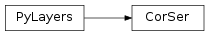

Contents
- 1 Environment Description
- 2 Antennas and Propagation
- 3 pylayers.antprop.antenna Module
- 4 pylayers.antprop.aarray Module
- 5 pylayers.antprop.spharm Module
- 6 pylayers.antprop.antssh Module
- 7 pylayers.antprop.antvsh Module
- 8 pylayers.antprop.slab Module
- 9 pylayers.antprop.signature Module
- 10 pylayers.antprop.interactions Module
- 11 pylayers.antprop.diffraction Module
- 12 pylayers.antprop.diffRT Module
- 13 pylayers.antprop.rays Module
- 14 pylayers.antprop.loss Module
- 15 pylayers.antprop.channel Module
- 16 pylayers.antprop.loss Module
- 17 pylayers.antprop.coverage Module
- 18 pylayers.antprop.coeffModel Module
- 19 Simulations
- 20 pylayers.simul.link Module
- 21 pylayers.simul.exploit Module
- 22 pylayers.simul.exploit_simulnet Module
- 23 pylayers.simul.simulnet Module
- 24 pylayers.simul.simultraj Module
- 25 pylayers.exploit.simnet Module
- 26 Measurement Data
- 27 pylayers.measures.mesuwb Module
- 28 pylayers.measures.mesmimo Module
- 29 pylayers.measures.cormoran Module
- 30 Instrumentation
- 31 pylayers.measures.vna.E5072A Module
- 32 pylayers.measures.parker.smparker Module
- 33 Agents and Bodies Mobility
- 34 pylayers.mobility.agent Module
1 Environment Description¶
1.1 Functions¶
PolygonPatch(polygon, **kwargs) |
Constructs a matplotlib patch from a geometric object |
array(object[, dtype, copy, order, subok, ndmin]) |
Create an array. |
cascaded_union |
Returns the union of a sequence of geometries |
cpu_count() |
Returns the number of CPUs in the system |
outputGi_func(args) |
|
outputGi_func_test(args) |
|
pbar(verbose, **kwargs) |
|
read_gpickle(path) |
Read graph object in Python pickle format. |
urlopen(url[, data, timeout, cafile, ...]) |
|
write_gpickle(G, path[, protocol]) |
Write graph in Python pickle format. |
1.2 Classes¶
Layout([string, _filematini, _fileslabini, ...]) |
Handling Layout |
SelectL(L, fig, ax) |
Associates a Layout and a figure |
1.3 Class Inheritance Diagram¶

3 pylayers.antprop.antenna Module¶
Antenna class inherites from Pattern class
3.1 Examples¶
>>> import matplotlib.pyplot as plt
>>> from pylayers.antprop.antenna import *
>>> A = Antenna()
>>> f,a=A.plotG(fGHz=[2,3,4],plan='theta',angdeg=0)
>>> plt.show()
3.2 Functions¶
AFLegendre(N, M, x) |
calculate Pmm1n and Pmp1n |
AFLegendre2(L, M, x) |
calculate Pmm1l and Pmp1l |
AFLegendre3(L, M, x) |
calculate Pmm1l and Pmp1l |
BeamGauss(theta, phi[, Gmax, HPBW_az, ...]) |
Beam with a Gaussian shape |
CartToSphere(theta, phi, ex, ey, ez[, ...]) |
Convert from Cartesian to Spherical |
F0(nu, sigma) |
F0 function for horn antenna pattern |
F1(nu, sigma) |
F1 function for horn antenna pattern |
RepAzimuth1(Ec, theta, phi[, th, typ]) |
response in azimuth |
SSHFunc(L, theta, phi) |
ssh function |
SSHFunc2(L, theta, phi) |
ssh function version 2 |
VW(l, m, theta, phi) |
evaluate vector Spherical Harmonics basis functions |
VW0(n, m, x, phi, Pmm1n, Pmp1n) |
evaluate vector Spherical Harmonics basis functions |
VW2(l, m, x, phi, Pmm1l, Pmp1l) |
evaluate vector Spherical Harmonics basis functions |
cformat(x, y, **kwargs) |
complex format |
compdiag(k, A, th, ph, Fthr, Fphr[, typ, ...]) |
makes comparison between original pattern and reconstructed pattern |
cylinder(fig, pa, pb, R) |
plot a cylinder |
displot(pt, ph[, arrow]) |
discontinuous plot |
factorial(n[, exact]) |
The factorial of a number or array of numbers. |
forcesympol(A) |
plot VSH transform vsh basis in 3D plot |
index_vsh(L, M) |
vector spherical harmonics indexing |
indexssh(L[, mirror]) |
create [l,m] indexation from Lmax |
indexvsh(L) |
calculate index of vsh |
level_energy(A, l[, ifreq, L]) |
calculates energy of the level l |
lmreshape(coeff[, L]) |
level and mode reshaping |
make_axes_locatable(axes) |
|
modeMax(coeff[, L, ifreq]) |
calculates maximal mode |
mode_energy(C, M[, L, ifreq]) |
calculates mode energy |
mode_energy2(A, m[, ifreq, L]) |
calculates mode energy (version 2) |
mulcplot(x, y, **kwargs) |
handling multiple complex variable plots |
plotVW(l, m, theta, phi[, sf]) |
plot VSH transform vsh basis in 3D plot |
pol3D(fig, rho, theta, phi[, sf, shade, title]) |
polar 3D surface plot |
polycol(lpoly[, var]) |
plot a collection of polygon |
rc(group, **kwargs) |
Set the current rc params. |
rectplot(x, xpos[, ylim]) |
plot rectangles on an axis |
relative_error(Eth_original, Eph_original, ...) |
calculate relative error between original and model |
shadow(data, ax) |
data : np.array |
show3D(F, theta, phi, k[, col]) |
show 3D matplotlib diagram |
ssh(A[, L, dsf]) |
This function calculates the Scalar Spherical Harmonics coefficients |
sshModel(c, d[, L]) |
calculates sshModel |
vsh(A[, dsf]) |
This function calculates the Vector Spherical Harmonics coefficients |
zeros(shape[, dtype, order]) |
Return a new array of given shape and type, filled with zeros. |
3.3 Classes¶
AntPosRot(name, p, T) |
Antenna + position + Rotation |
Antenna([typ]) |
Attributes |
FontProperties([family, style, variant, ...]) |
A class for storing and manipulating font properties. |
MaxNLocator(*args, **kwargs) |
Select no more than N intervals at nice locations. |
Pattern() |
Class Pattern |
PolyCollection(verts[, sizes, closed]) |
Attributes |
PyLayers |
Generic PyLayers Meta Class |
SCoeff([typ, fmin, fmax, lmax, data, dtype, ...]) |
scalar Spherical Harmonics coefficients |
SSHCoeff(Cx, Cy, Cz) |
scalar spherical harmonics |
VCoeff(typ[, fmin, fmax, data, dtype, ind, ...]) |
Spherical Harmonics Coefficient |
VSHCoeff(Br, Bi, Cr, Ci) |
Vector Spherical Harmonics Coefficients class |
VectorCoeff(typ[, fmin, fmax, data, dtype, ...]) |
class vector spherical harmonics |
3.4 Class Inheritance Diagram¶

4 pylayers.antprop.aarray Module¶
4.1 Functions¶
k2xyz(ik, sh) |
|
||
weights(nx, nz, kx, kz, Kx, Kz) |
Practical Demonstration of Limited Feedback Beamforming for mmWave Systems | ||
xyztok(iz, iy, ix[, Nx, Ny]) |
4.2 Classes¶
AntArray(**kwargs) |
Class AntArray |
Array(p[, w]) |
Array class |
Combiner(Wbr, Whb, Wsh) |
Methods |
Precoder(Fhs, Fbh, Fht) |
Methods |
TXRU() |
Tranceiver Units |
UCArray(p[, w]) |
Uniform Circular Array |
ULArray(**kwargs) |
Uniform Linear Array |
4.3 Class Inheritance Diagram¶

5 pylayers.antprop.spharm Module¶
This module handles Scalar and Vector Spherical Harmonics in PyLayers
5.1 Class VectorCoeff¶
5.2 class SSHCoeff¶
-
class
pylayers.antprop.spharm.SSHCoeff(Cx, Cy, Cz)¶ scalar spherical harmonics
Attributes
Cx (coefficient for x axis) Cy (coefficient for y axis) Cz (coefficient for z axis) Methods
help([letter, typ])generic help s2tos3([threshold])convert scalar spherical coefficients from shape 2 to shape 3 sets3(Cx, Cy, Cz)set shape 3 -
s2tos3(threshold=-1)¶ convert scalar spherical coefficients from shape 2 to shape 3
Parameters: threshold : float
default 1e-5
Notes
s3 corresponds to energy thresholded coefficients
-
sets3(Cx, Cy, Cz)¶ set shape 3
Parameters: Cx : SCoeff
Cy : SCoeff
Cz : SCoeff
-
5.3 class SCoeff¶
-
class
pylayers.antprop.spharm.SCoeff(typ='s2', fmin=0.6, fmax=6, lmax=20, data=array([], dtype=float64), ind=array([], dtype=float64), k=array([], dtype=float64))¶ scalar Spherical Harmonics coefficients
d = np.array [Nf,N+1,M+1]
Attributes
s2 shape 2 np.array [ Nf x (N+1)*(M+1) ] s3 shape 3 np.array [ Nf x K ] ind [ K x 2] Methods
delete(ind, typ)delete coeff delete3(ind)delete coeff.s3 help([letter, typ])generic help inits2(data, ind)initialize shape 2 format inits3(data, ind, k)initialize shape 3 format plot([typ, title, xl, yl, log, stem, color])plot coeff put(typ)recover last deleted coeff put3(i, i3)function put3 s3tos2()transform shape3 to shape 2 show([typ, k, L, M, kmax, seuildb, titre, ...])show coeff -
delete(ind, typ)¶ delete coeff
Parameters: ind : int
typ : int
2 shape 2 (Nf , N*M ) 3 shape 3 (Nf , K ) T ( K x 2 )
-
delete3(ind)¶ delete coeff.s3
Parameters: ind : int
-
inits2(data, ind)¶ initialize shape 2 format
Parameters: data : shape 2 data
ind : np.array
index for shape 2
-
inits3(data, ind, k)¶ initialize shape 3 format
Parameters: data : shape 3 data
ind : shape 3 indexing
k : k
-
plot(typ='s3', title='', xl=False, yl=False, log=False, stem=True, color='b')¶ plot coeff
Parameters: typ : string
‘s3’
title
xl
yl
log
stem: boolean
color
-
put(typ)¶ recover last deleted coeff
Parameters: typ : int
2 : shape 2 (Nf , N*M ) 3 : shape 3 (Nf , K ) T ( K x 2 )
-
put3(i, i3)¶ function put3
Parameters: i : int
i3 : int
-
s3tos2()¶ transform shape3 to shape 2
s2 shape 2 array [ Nf x (L+1)*(M+1) ] s3 shape 3 array [ Nf x K ] ind [ K x 2]
Notes
The shape of s2 is (Lmax+1)*(Lmax+2)/2
k2 : is the list of conserved indices in shape 3 ind3 : np.array (K3, 2) are the conserved (l,m) indices
ind3 and k2 have one common dimension
-
show(typ='s1', k=0, L=-1, M=-1, kmax=1000, seuildb=50, titre='SHC', xl=True, yl=True, fontsize=14, dB=True, cmap=<matplotlib.colors.LinearSegmentedColormap object>, anim=True)¶ show coeff
Parameters: typ : string
default (‘s1’) ‘s1’ shape 1 (Nf , L , M ) ‘s2’ shape 2 (Nf , L*M ) ‘s3’ shape 3 (Nf , K ) and ( K x 2 )
k : integer
frequency index default 0
N, M = maximal value for degree, mode respectively
(not to be defined if ‘s2’ or ‘s3’)
-
5.4 class VCoeff¶
5.5 class VSHCoeff¶
-
class
pylayers.antprop.spharm.VSHCoeff(Br, Bi, Cr, Ci)¶ Vector Spherical Harmonics Coefficients class
Notes
Br = VCoeff(br) Bi = VCoeff(bi) Cr = VCoeff(cr) Ci = VCoeff(ci)
C = VSHCoeff(Br,Bi,Cr,Ci)
Attributes
Bi Br Ci Cr Methods
drag3(Emin)thresholded coefficient conversion energy([typ])returns aggregated energy over all coefficients plot([typ, titre, log, stem, subp])plot coeff put3(i, i3)put 3 s1tos2([L2])convert shape 1 to shape 2 s2tos3([threshold])convert vector spherical coefficients from shape 2 to shape 3 s2tos3_new(k)convert vector spherical coefficient from shape 2 to shape 3 s3tos2()shape 3 to shape 2 show([typ, k, N, M, kmax, seuildb, animate, ...])show VSH coeff strip3()Thresholded coefficient conversion -
drag3(Emin)¶ thresholded coefficient conversion
Parameters: Emin : Minimum energy
-
energy(typ='s1')¶ returns aggregated energy over all coefficients
Parameters: typ : string
{‘s1’|’s2’|’s3’}
Returns: E : np.array in the same shape as typ
s1 : (f,l,m) s2 : (f,l*m) s3 : (f,ncoeff<lm)
-
plot(typ='s3', titre='titre', log=False, stem=True, subp=True)¶ plot coeff
Parameters: typ
titre
log
stem
subp
-
put3(i, i3)¶ put 3
Parameters: i : int
i3 : int
-
s1tos2(L2=-1)¶ convert shape 1 to shape 2
shape 1 array [ Nf x (L+1) x (M+1) ] shape 2 array [ Nf x (L+1)*(M+1) ]
Parameters: L2 : max level
default (-1 means all values)
-
s2tos3(threshold=-1)¶ convert vector spherical coefficients from shape 2 to shape 3
Parameters: threshold : float
default 1e-20
Energy thresholded coefficients
-
s2tos3_new(k)¶ convert vector spherical coefficient from shape 2 to shape 3
Parameters: k : number of coeff
-
s3tos2()¶ shape 3 to shape 2
-
show(typ='s1', k=1, N=-1, M=-1, kmax=1000, seuildb=50, animate=False, titre='')¶ show VSH coeff
Parameters: typ : str
{‘s1’,’s2’,’s3’}
k : int
frequency index
kmax : int
maximum of the unfolded coefficient axes
N : int
M : int
seuildB : float
animate : boolean
default False
-
strip3()¶ Thresholded coefficient conversion
The s3 minimum energy coefficient is deleted
Returns: ind : int
ind3 : int
-
5.6 Utility Functions¶
indexssh(L[, mirror]) |
create [l,m] indexation from Lmax |
indexvsh(L) |
calculate index of vsh |
index_vsh(L, M) |
vector spherical harmonics indexing |
AFLegendre3(L, M, x) |
calculate Pmm1l and Pmp1l |
AFLegendre2(L, M, x) |
calculate Pmm1l and Pmp1l |
AFLegendre(N, M, x) |
calculate Pmm1n and Pmp1n |
VW2(l, m, x, phi, Pmm1l, Pmp1l) |
evaluate vector Spherical Harmonics basis functions |
VW(l, m, theta, phi) |
evaluate vector Spherical Harmonics basis functions |
VW0(n, m, x, phi, Pmm1n, Pmp1n) |
evaluate vector Spherical Harmonics basis functions |
plotVW(l, m, theta, phi[, sf]) |
plot VSH transform vsh basis in 3D plot |
5.7 Functions¶
AFLegendre(N, M, x) |
calculate Pmm1n and Pmp1n |
AFLegendre2(L, M, x) |
calculate Pmm1l and Pmp1l |
AFLegendre3(L, M, x) |
calculate Pmm1l and Pmp1l |
VW(l, m, theta, phi) |
evaluate vector Spherical Harmonics basis functions |
VW0(n, m, x, phi, Pmm1n, Pmp1n) |
evaluate vector Spherical Harmonics basis functions |
VW2(l, m, x, phi, Pmm1l, Pmp1l) |
evaluate vector Spherical Harmonics basis functions |
cformat(x, y, **kwargs) |
complex format |
cylinder(fig, pa, pb, R) |
plot a cylinder |
displot(pt, ph[, arrow]) |
discontinuous plot |
factorial(n[, exact]) |
The factorial of a number or array of numbers. |
index_vsh(L, M) |
vector spherical harmonics indexing |
indexssh(L[, mirror]) |
create [l,m] indexation from Lmax |
indexvsh(L) |
calculate index of vsh |
mulcplot(x, y, **kwargs) |
handling multiple complex variable plots |
plotVW(l, m, theta, phi[, sf]) |
plot VSH transform vsh basis in 3D plot |
pol3D(fig, rho, theta, phi[, sf, shade, title]) |
polar 3D surface plot |
polycol(lpoly[, var]) |
plot a collection of polygon |
rc(group, **kwargs) |
Set the current rc params. |
rectplot(x, xpos[, ylim]) |
plot rectangles on an axis |
shadow(data, ax) |
data : np.array |
5.8 Classes¶
FontProperties([family, style, variant, ...]) |
A class for storing and manipulating font properties. |
PolyCollection(verts[, sizes, closed]) |
Attributes |
PyLayers |
Generic PyLayers Meta Class |
SCoeff([typ, fmin, fmax, lmax, data, dtype, ...]) |
scalar Spherical Harmonics coefficients |
SSHCoeff(Cx, Cy, Cz) |
scalar spherical harmonics |
VCoeff(typ[, fmin, fmax, data, dtype, ind, ...]) |
Spherical Harmonics Coefficient |
VSHCoeff(Br, Bi, Cr, Ci) |
Vector Spherical Harmonics Coefficients class |
VectorCoeff(typ[, fmin, fmax, data, dtype, ...]) |
class vector spherical harmonics |
5.9 Class Inheritance Diagram¶

6 pylayers.antprop.antssh Module¶
6.1 Scalar Spherical Harmonics Functions¶
SSHFunc(L, theta, phi) |
ssh function |
SSHFunc2(L, theta, phi) |
ssh function version 2 |
SphereToCart(theta, phi, eth, eph, bfreq) |
Spherical to Cartesian |
CartToSphere(theta, phi, ex, ey, ez[, ...]) |
Convert from Cartesian to Spherical |
6.2 Functions¶
AFLegendre(N, M, x) |
calculate Pmm1n and Pmp1n |
AFLegendre2(L, M, x) |
calculate Pmm1l and Pmp1l |
AFLegendre3(L, M, x) |
calculate Pmm1l and Pmp1l |
CartToSphere(theta, phi, ex, ey, ez[, ...]) |
Convert from Cartesian to Spherical |
SSHFunc(L, theta, phi) |
ssh function |
SSHFunc2(L, theta, phi) |
ssh function version 2 |
SphereToCart(theta, phi, eth, eph, bfreq) |
Spherical to Cartesian |
VW(l, m, theta, phi) |
evaluate vector Spherical Harmonics basis functions |
VW0(n, m, x, phi, Pmm1n, Pmp1n) |
evaluate vector Spherical Harmonics basis functions |
VW2(l, m, x, phi, Pmm1l, Pmp1l) |
evaluate vector Spherical Harmonics basis functions |
cformat(x, y, **kwargs) |
complex format |
cylinder(fig, pa, pb, R) |
plot a cylinder |
displot(pt, ph[, arrow]) |
discontinuous plot |
factorial(n[, exact]) |
The factorial of a number or array of numbers. |
index_vsh(L, M) |
vector spherical harmonics indexing |
indexssh(L[, mirror]) |
create [l,m] indexation from Lmax |
indexvsh(L) |
calculate index of vsh |
mulcplot(x, y, **kwargs) |
handling multiple complex variable plots |
plotVW(l, m, theta, phi[, sf]) |
plot VSH transform vsh basis in 3D plot |
pol3D(fig, rho, theta, phi[, sf, shade, title]) |
polar 3D surface plot |
polycol(lpoly[, var]) |
plot a collection of polygon |
rc(group, **kwargs) |
Set the current rc params. |
rectplot(x, xpos[, ylim]) |
plot rectangles on an axis |
shadow(data, ax) |
data : np.array |
ssh(A[, L, dsf]) |
This function calculates the Scalar Spherical Harmonics coefficients |
7 pylayers.antprop.antvsh Module¶
vsh(A[, dsf]) |
This function calculates the Vector Spherical Harmonics coefficients |
7.1 Functions¶
AFLegendre(N, M, x) |
calculate Pmm1n and Pmp1n |
AFLegendre2(L, M, x) |
calculate Pmm1l and Pmp1l |
AFLegendre3(L, M, x) |
calculate Pmm1l and Pmp1l |
VW(l, m, theta, phi) |
evaluate vector Spherical Harmonics basis functions |
VW0(n, m, x, phi, Pmm1n, Pmp1n) |
evaluate vector Spherical Harmonics basis functions |
VW2(l, m, x, phi, Pmm1l, Pmp1l) |
evaluate vector Spherical Harmonics basis functions |
cformat(x, y, **kwargs) |
complex format |
cylinder(fig, pa, pb, R) |
plot a cylinder |
displot(pt, ph[, arrow]) |
discontinuous plot |
factorial(n[, exact]) |
The factorial of a number or array of numbers. |
index_vsh(L, M) |
vector spherical harmonics indexing |
indexssh(L[, mirror]) |
create [l,m] indexation from Lmax |
indexvsh(L) |
calculate index of vsh |
mathtogeo(reverseLatitude, standardShape, ...) |
|
mulcplot(x, y, **kwargs) |
handling multiple complex variable plots |
plotVW(l, m, theta, phi[, sf]) |
plot VSH transform vsh basis in 3D plot |
pol3D(fig, rho, theta, phi[, sf, shade, title]) |
polar 3D surface plot |
polycol(lpoly[, var]) |
plot a collection of polygon |
rc(group, **kwargs) |
Set the current rc params. |
rectplot(x, xpos[, ylim]) |
plot rectangles on an axis |
shadow(data, ax) |
data : np.array |
vsh(A[, dsf]) |
This function calculates the Vector Spherical Harmonics coefficients |
7.1.1 Materials and Slabs¶
8 pylayers.antprop.slab Module¶
This module implements the Material and Slab class which are used in the ray tracing engine rays.py. It exploits heavily numpy broadcasting mechanism :
The adopted axis convention is the following
- nf : axis = 0 frequency axis
- nt : axis = 1 angular axis
- p : axis = 2 parallel polarization axis
- o : axis = 3 orhogonal polarization axis
8.1 Interface Class¶
-
class
pylayers.antprop.slab.Interface(fGHz=array([ 2.4]), theta=array([[ 0.+0.j]]), name='')¶ Interface between 2 medium
Attributes
fGHz np.array (nf,1) theta np.array (1,nt) Ip np.array (nf,nt,2,2) Io np.array (nf,nt,2,2) Methods
RT([metalic, RT])evaluate Reflection and Transmission matrix help([letter, typ])generic help loss0(fGHz[, display])evaluate Loss at normal incidence theta=0 losst(fGHz[, display, dB])evaluate Loss pcolor([dB])display of R & T coefficients wrt frequency an angle plotwrt([var, kv])plot R & T coefficients with respect to angle or frequency tocolor(fGHz)convert transmission into color -
RT(metalic=False, RT='RT')¶ evaluate Reflection and Transmission matrix
Parameters: metalic : boolean
RT : string
choose R or T
Notes
\[\begin{split}R = \left[\begin{array}[cc](R_o & 0\\0 & R_p)\end{array}\right] T = \left[\begin{array}[cc](T_o & 0\\0 & T_p)\end{array}\right]\end{split}\]R : np.array (f , th , 2, 2) T : np.array (f , th , 2, 2)
-
loss0(fGHz, display=False)¶ evaluate Loss at normal incidence theta=0
Parameters: fGHz : np.array (nf,1)
display : boolean
default (False)
Returns: Lo : loss in dB polarization orthogonal
Lp : loss in dB polarization parallel
-
losst(fGHz, display=False, dB=True)¶ evaluate Loss
Parameters: fGHz : np.arrray (nf)
display : boolean
default False
dB : booean
default True
Returns: Lo : np.array
Loss orthogonal polarization (dB)
Lp : np.array
Loss parallel polarization (dB)
Examples
>>> from pylayers.antprop.slab import *
-
pcolor(dB=False)¶ display of R & T coefficients wrt frequency an angle
Parameters: dB : boolean
default False
-
plotwrt(var='a', kv=0, **kwargs)¶ plot R & T coefficients with respect to angle or frequency
Parameters: kv : int
variable index
polar: string
‘po’, # po | p | o (parallel+ortho | parallel | ortogonal)
coeff: string
‘RT’, # RT | R | T (Reflexion & Transmission ) | Reflexion | Transmission
var: string
‘a’, # a | f angle | frequency
typ : string
‘m’ | ‘r’ | ‘d’ | ‘l20’
mod rad deg dB
Examples
>>> from pylayers.antprop.slab import * >>> import matplotlib.pylab as plt >>> import numpy as np >>> theta = np.arange(0,np.pi/2,0.01) >>> fGHz = np.arange(0.1,10,0.2) >>> sl = SlabDB('matDB.ini','slabDB.ini') >>> mat = sl.mat >>> lmatname = [mat['AIR'],mat['WOOD']] >>> II = MatInterface(lmatname,0,fGHz,theta) >>> II.RT() >>> fig,ax = II.plotwrt(var='a',kv=10,typ=['m']) >>> air = mat['AIR'] >>> brick = mat['BRICK'] >>> II = MatInterface([air,brick],0,fGHz,theta) >>> II.RT() >>> fig,ax = II.plotwrt(var='f',color='k',typ=['m']) >>> plt.ion() >>> plt.show()
-
tocolor(fGHz)¶ convert transmission into color
Parameters: fGHz : np.array
Returns: col : string
hexadecimal color
See also
pylayers.gis.layout.showGs
-
8.2 MatInterface Class¶
-
class
pylayers.antprop.slab.MatInterface(lmat, l, fGHz, theta)¶ MatInterface : Class for Interface between two materials
l distance from the next Interface
Notes
This is required for recursive utilization of this function when the output angle of an interface happens to be the input angle of the next interface. As this angle depends on materials which themselves depends on frequency THETA is becoming a full matrix without redundancy between lines.
>>> theta = np.arange(0,np.pi/2,0.01) >>> fGHz = np.arange(3.1,10.6,0.2) >>> Nf = len(fGHz) >>> Nt = len(theta) >>> sl = SlabDB('matDB.ini','slabDB.ini') >>> mat = sl.mat >>> m1 = mat['AIR'] >>> m2 = mat['PLASTER'] >>> II = MatInterface([m1,m2],0,fGHz,theta)\[\]I_p = left| begin{array}{cc} frac{1}{T_p} & frac{R_p}{T_p} \ frac{R_p}{T_p} & frac{1}{T_p} end{array}right|
I_o = left| begin{array}{cc} frac{1}{T_o} & frac{R_o}{T_o} \ frac{R_o}{T_o} & frac{1}{T_o} end{array}right|
MatIinterface fix the np.pi/2 NaN problem
Methods
RT([metalic, RT])evaluate Reflection and Transmission matrix help([letter, typ])generic help loss0(fGHz[, display])evaluate Loss at normal incidence theta=0 losst(fGHz[, display, dB])evaluate Loss pcolor([dB])display of R & T coefficients wrt frequency an angle plotwrt([var, kv])plot R & T coefficients with respect to angle or frequency tocolor(fGHz)convert transmission into color
8.3 Mat Class¶
-
class
pylayers.antprop.slab.Mat(name, **dm)¶ Handle constitutive materials dictionnary
Attributes
name (string) name character string (default ‘AIR’) index (int) default 1 er (complex) relative permittivity (w.d) (1+0j) mur (complex) relative permeability (w.d) (1+0j) sigma (float) conductivity (S/m) 0 roughness (float) (meter) 0 Methods
R(fGHz, theta)Calculate Reflection coefficient on the air|mat interface clear(() -> None. Remove all items from D.)copy(() -> a shallow copy of D)eval(fGHz)evaluate Mat at given frequencies fromkeys(...)v defaults to None. get((k[,d]) -> D[k] if k in D, ...)has_key((k) -> True if D has a key k, else False)help([letter, typ])generic help info()display material properties items(() -> list of D’s (key, value) pairs, ...)iteritems(() -> an iterator over the (key, ...)iterkeys(() -> an iterator over the keys of D)itervalues(...)keys(() -> list of D’s keys)pop((k[,d]) -> v, ...)If key is not found, d is returned if given, otherwise KeyError is raised popitem(() -> (k, v), ...)2-tuple; but raise KeyError if D is empty. setdefault((k[,d]) -> D.get(k,d), ...)update(([E, ...)If E present and has a .keys() method, does: for k in E: D[k] = E[k] values(() -> list of D’s values)viewitems(...)viewkeys(...)viewvalues(...)-
R(fGHz, theta)¶ Calculate Reflection coefficient on the air|mat interface
Parameters: fGHz : frequency GHz
theta : incidence angle referenced from interface normal
Returns: Ro,Rp : orthogonal and parallel Reflexion coefficient
-
eval(fGHz)¶ evaluate Mat at given frequencies
Parameters: fGHz : np.array()
frequency (GHz)
Notes
w = 2*np.pi*f*1e-9 eps0 = 8.854e-12
100 MHz = 0.1 GHz 10 MHz = 0.01 GHz
sigma/(w*eps0) = sigma/(2*pi*fGHz*1e9*eps0) sigma/(w*eps0) = sigma/(2*pi*fGHz*1e9*8.854e-12) sigma/(w*eps0) = sigma/(2*pi*fGHz*1e-3*8.854) sigma/(w*eps0) = 17.98 * sigma/fGHz
-
info()¶ display material properties
-
8.4 MatDB Class¶
-
class
pylayers.antprop.slab.MatDB(_fileini='', dm={})¶ MatDB Class : Material database
Attributes
di (dict) associate numeric and alphanumeric keys Methods
add(**kwargs)add a material in the DB addgui([name])Add a material in the DB choose()Choose a mat from matdir clear(() -> None. Remove all items from D.)copy(() -> a shallow copy of D)delete(name)Delete a material in the DB edit(name)Edit a material in the DB fromkeys(...)v defaults to None. get((k[,d]) -> D[k] if k in D, ...)has_key((k) -> True if D has a key k, else False)help([letter, typ])generic help info()get MatDB info items(() -> list of D’s (key, value) pairs, ...)iteritems(() -> an iterator over the (key, ...)iterkeys(() -> an iterator over the keys of D)itervalues(...)keys(() -> list of D’s keys)load(_fileini)Load a Material from a .ini file pop((k[,d]) -> v, ...)If key is not found, d is returned if given, otherwise KeyError is raised popitem(() -> (k, v), ...)2-tuple; but raise KeyError if D is empty. save([_fileini])save MatDB in an ini file setdefault((k[,d]) -> D.get(k,d), ...)update(([E, ...)If E present and has a .keys() method, does: for k in E: D[k] = E[k] values(() -> list of D’s values)viewitems(...)viewkeys(...)viewvalues(...)-
add(**kwargs)¶ add a material in the DB
Parameters: name : string
material name
cval : float or complex
epsilon or index
sigma : float or complex
conductivity
mur : float
relative permeability
typ : string
{‘epsr’|’ind’|,’reim’,|‘THz’|’itu’}
Notes
Different ways to enter a material are :
- ‘epsr’ : epsr and sigma
cval = epsr sigma = sigma
- ‘ind’ : indice @ fGHz
cval = indice
- ‘reim’ : real(epsr) and imag(epsr) @fGHz
- ‘THz’
- ITU parameter (a,b,c,d)
Examples
>>> from pylayers.antprop.slab import * >>> m = MatDB() >>> m.load('matDB.ini') >>> m.add(name='ConcreteJcB',cval=3.5+0*1j,alpha_cmm1=1.9,fGHz=120,typ='THz') >>> m.add(name='GlassJcB',cval=3.5+0*1j,alpha_cmm1=1.9,fGHz=120,typ='THz') >>> out = m.save('Jacob.ini')
-
addgui(name='MAT')¶ Add a material in the DB
Parameters: name : string
default ‘MAT’
-
choose()¶ Choose a mat from matdir
-
delete(name)¶ Delete a material in the DB
Parameters: name : string
-
edit(name)¶ Edit a material in the DB
Parameters: name : vstring
-
info()¶ get MatDB info
TODO : make a __repr__
-
load(_fileini)¶ Load a Material from a .ini file
Parameters: _fileini : string
name of the matDB file (usually matDB.ini)
-
save(_fileini='matDB.ini')¶ save MatDB in an ini file
[dict] id1 = name1 [name1] epsr = mur = sigma = roughness =
-
8.5 Slab Class¶
-
class
pylayers.antprop.slab.Slab(name, matDB, ds={})¶ A Slab is a sequence of layers which have
- a given width
- a given material from the material DB
Attributes
name : Slab name nbmat : Number of layers index : Slab Index lmatname : list of material name lthick : list of thickness of layers color : color of slab dor display linewidth : linewidth for structure display mat (Associated Material Database) evaluated (Boolean) Methods
RT([metalic, RT])evaluate Reflection and Transmission matrix clear(() -> None. Remove all items from D.)conv(matDB)build the Slab list of materials lmat copy(() -> a shallow copy of D)eval([fGHz, theta, compensate, RT])evaluation of the Slab excess_grdelay([fGHz, theta])calculate transmission excess delay in ns filter(win[, theta])filtering waveform fromkeys(...)v defaults to None. get((k[,d]) -> D[k] if k in D, ...)has_key((k) -> True if D has a key k, else False)help([letter, typ])generic help info()display Slab Info items(() -> list of D’s (key, value) pairs, ...)iteritems(() -> an iterator over the (key, ...)iterkeys(() -> an iterator over the keys of D)itervalues(...)keys(() -> list of D’s keys)loss0([fGHz])calculate loss for theta=0 at frequency (fGHz) losst(fGHz, theta)Calculate loss w.r.t angle and frequency pcolor([dB])display of R & T coefficients wrt frequency an angle plotwrt([var, kv])plot R & T coefficients with respect to angle or frequency pop((k[,d]) -> v, ...)If key is not found, d is returned if given, otherwise KeyError is raised popitem(() -> (k, v), ...)2-tuple; but raise KeyError if D is empty. setdefault((k[,d]) -> D.get(k,d), ...)show([fGHz, theta, dtype, dB])show slab Reflection and Transmission coefficient tocolor([fGHz])convert slab properrties into a color update(([E, ...)If E present and has a .keys() method, does: for k in E: D[k] = E[k] values(() -> list of D’s values)viewitems(...)viewkeys(...)viewvalues(...)-
conv(matDB)¶ build the Slab list of materials lmat
-
eval(fGHz=array([ 1.]), theta=array([ 0., 0.03205707, 0.06411414, 0.0961712, 0.12822827, 0.16028534, 0.19234241, 0.22439948, 0.25645654, 0.28851361, 0.32057068, 0.35262775, 0.38468481, 0.41674188, 0.44879895, 0.48085602, 0.51291309, 0.54497015, 0.57702722, 0.60908429, 0.64114136, 0.67319843, 0.70525549, 0.73731256, 0.76936963, 0.8014267, 0.83348377, 0.86554083, 0.8975979, 0.92965497, 0.96171204, 0.9937691, 1.02582617, 1.05788324, 1.08994031, 1.12199738, 1.15405444, 1.18611151, 1.21816858, 1.25022565, 1.28228272, 1.31433978, 1.34639685, 1.37845392, 1.41051099, 1.44256806, 1.47462512, 1.50668219, 1.53873926, 1.57079633]), compensate=False, RT='RT')¶ evaluation of the Slab
Parameters: fGHz : frequency GHz ( np.array([1.0]) )
theta : np.array
incidence angle (from normal) radians
compensate : boolean
RT : string
-
excess_grdelay(fGHz=array([ 2.4, 2.5, 2.6, 2.7, 2.8, 2.9, 3., 3.1, 3.2, 3.3, 3.4, 3.5, 3.6, 3.7, 3.8, 3.9]), theta=array([0]))¶ calculate transmission excess delay in ns
Parameters: fGHz : array
default arange(2.4,4,0.1)
theta : default 0
Returns: delayo : excess delay polarization o
delayp : excess delay polarization p
Examples
#>>> from pylayers.antprop.slab import * #>>> from matplotlib.pylab import * #>>> import numpy as np #>>> sl = SlabDB(‘matDB.ini’,’slabDB.ini’) #>>> s1 = sl[‘PARTITION’] #>>> fGHz = np.arange(3.1,10.6,0.1) #>>> delayo,delayp = s1.excess_grdelay(fGHz,0) #>>> lineo = plt.plot(fGHz[0:-1],delayo) #>>> linep = plt.plot(fGHz[0:-1],delayp) #>>> plt.show()
-
filter(win, theta=0)¶ filtering waveform
Parameters: win : Waveform Returns: wout : Waveform
-
info()¶ display Slab Info
Examples
>>> import numpy as np >>> import matplotlib.pyplot as plt >>> from pylayers.antprop.slab import * >>> sl = SlabDB('matDB.ini','slabDB.ini') >>> lmatname = ['PLATRE-57GHz','AIR','PLATRE-57GHz'] >>> lthick = [0.018,0.03,0.018] >>> sl.add('placo',lmatname,lthick) >>> theta = np.arange(0,np.pi/2,0.01) >>> fGHz = np.array([57.5]) >>> sl['placo'].eval(fGHz,theta) >>> fig,ax=sl['placo'].plotwrt(var='a',typ=['m']) >>> plt.ion() >>> plt.show()
-
loss0(fGHz=2.4)¶ calculate loss for theta=0 at frequency (fGHz)
Parameters: fGHz : frequency (GHz) np.array()
default 2.4
Returns: Lo : np.array
Loss at 0 deg polarization ortho
Lp : np.array
Loss at 0 deg polarization para
Examples
>>> from pylayers.antprop.slab import * >>> sl = SlabDB('matDB.ini','slabDB.ini') >>> s1 = sl['AIR'] >>> Lo,Lp = s1.loss0(2.4) >>> assert (np.allclose(Lo[0],0)),'Problem with AIR slab loss' >>> assert (np.allclose(Lo[0],Lp[0])),'something wrong with polarization'
-
losst(fGHz, theta)¶ Calculate loss w.r.t angle and frequency
Parameters: fGHz : np.array()
frequency (GHz)
theta : np.array
theta angle (radians)
Returns: Lo : np.array
Loss orthogonal
Lp : np.array
Loss paralell
-
show(fGHz=2.4, theta=array([ 0., 0.01, 0.02, 0.03, 0.04, 0.05, 0.06, 0.07, 0.08, 0.09, 0.1, 0.11, 0.12, 0.13, 0.14, 0.15, 0.16, 0.17, 0.18, 0.19, 0.2, 0.21, 0.22, 0.23, 0.24, 0.25, 0.26, 0.27, 0.28, 0.29, 0.3, 0.31, 0.32, 0.33, 0.34, 0.35, 0.36, 0.37, 0.38, 0.39, 0.4, 0.41, 0.42, 0.43, 0.44, 0.45, 0.46, 0.47, 0.48, 0.49, 0.5, 0.51, 0.52, 0.53, 0.54, 0.55, 0.56, 0.57, 0.58, 0.59, 0.6, 0.61, 0.62, 0.63, 0.64, 0.65, 0.66, 0.67, 0.68, 0.69, 0.7, 0.71, 0.72, 0.73, 0.74, 0.75, 0.76, 0.77, 0.78, 0.79, 0.8, 0.81, 0.82, 0.83, 0.84, 0.85, 0.86, 0.87, 0.88, 0.89, 0.9, 0.91, 0.92, 0.93, 0.94, 0.95, 0.96, 0.97, 0.98, 0.99, 1., 1.01, 1.02, 1.03, 1.04, 1.05, 1.06, 1.07, 1.08, 1.09, 1.1, 1.11, 1.12, 1.13, 1.14, 1.15, 1.16, 1.17, 1.18, 1.19, 1.2, 1.21, 1.22, 1.23, 1.24, 1.25, 1.26, 1.27, 1.28, 1.29, 1.3, 1.31, 1.32, 1.33, 1.34, 1.35, 1.36, 1.37, 1.38, 1.39, 1.4, 1.41, 1.42, 1.43, 1.44, 1.45, 1.46, 1.47, 1.48, 1.49, 1.5, 1.51, 1.52, 1.53, 1.54, 1.55, 1.56, 1.57]), dtype=<type 'numpy.float64'>, dB=False)¶ show slab Reflection and Transmission coefficient
Parameters: fGHz : float
theta : np.array
dtype :
display : string
{‘modulus’}
dB : boolean
False
-
tocolor(fGHz=array([ 2.4]))¶ convert slab properrties into a color
Parameters: fGHz : np.array Examples
>>> sl = SlabDB('matDB.ini','slabDB.ini') >>> s1 = sl['PARTITION'] >>> col24 = s1.tocolor(np.array([2.4])) >>> fGHz = np.arange(0.5,8,100) >>> col8 = s1.tocolor(fGHz)
8.6 SlabDB Class¶
-
class
pylayers.antprop.slab.SlabDB(fileslab='', filemat='', ds={}, dm={'_AIR': {'sigma': 0.0, 'roughness': 0.0, 'epr': (1+0j), 'mur': (1+0j)}, 'METAL': {'sigma': 10000000, 'roughness': 0.0, 'epr': (1+0j), 'mur': (1+0j)}, 'AIR': {'sigma': 0.0, 'roughness': 0.0, 'epr': (1+0j), 'mur': (1+0j)}})¶ Slab data base
Attributes
DB (slab dictionnary) Methods
add(name, lmatname, lthick[, color])add a slab from its properties addgui(name)add a slab in the DB clear(() -> None. Remove all items from D.)copy(() -> a shallow copy of D)delete(name)delete an element from the database edit(name)edit a Slab in the DB fromkeys(...)v defaults to None. get((k[,d]) -> D[k] if k in D, ...)has_key((k) -> True if D has a key k, else False)items(() -> list of D’s (key, value) pairs, ...)iteritems(() -> an iterator over the (key, ...)iterkeys(() -> an iterator over the keys of D)itervalues(...)keys(() -> list of D’s keys)load([_fileini])Load a Material from a .ini file pop((k[,d]) -> v, ...)If key is not found, d is returned if given, otherwise KeyError is raised popitem(() -> (k, v), ...)2-tuple; but raise KeyError if D is empty. save([_fileini])save SlabDB in a .ini file setdefault((k[,d]) -> D.get(k,d), ...)show([name, fGHz])evaluate and show a given slab showall()show all slabs update(([E, ...)If E present and has a .keys() method, does: for k in E: D[k] = E[k] values(() -> list of D’s values)viewitems(...)viewkeys(...)viewvalues(...)-
add(name, lmatname, lthick, color='black')¶ add a slab from its properties
Parameters: name : string
lmatname : list of mat name
lthick : list ot float
list of layer thickness in meters
Examples
Examples from the paper:
“Reflection and Transmission Properties of Building Materials in D-Band for Modeling Future mm-Wave Communication Systems ” Martin Jacob and Thomas Kurner and Robert Geise and Radoslaw Piesiewicz EUCAP 2010
>>> from pylayers.antprop.slab import * >>> import numpy as np >>> import matplotlib.pylab as plt >>> sl = SlabDB(filemat='matDB.ini',fileslab='slabDB.ini') >>> sl.mat.add(name='ConcreteJc',cval=3.5,alpha_cmm1=1.9,fGHz=120,typ='THz') >>> sl.mat.add(name='GlassJc',cval=2.55,alpha_cmm1=2.4,fGHz=120,typ='THz') >>> sl.add('ConcreteJc',['ConcreteJc'],[0.049]) >>> sl.add('DoubleGlass',['GlassJc','AIR','GlassJc'],[0.0029,0.0102,0.0029]) >>> theta = np.linspace(20,60,100)*np.pi/180 >>> sl['ConcreteJc'].eval(120,theta) >>> f,a=sl['ConcreteJc'].plotwrt(var='a',typ=['l20']) >>> fig = plt.figure() >>> sl['DoubleGlass'].eval(120,theta) >>> f,a = sl['DoubleGlass'].plotwrt(var='a',typ=['l20']) >>> freq = np.linspace(110,135,50) >>> fig = plt.figure() >>> sl['DoubleGlass'].eval(freq,theta) >>> sl['DoubleGlass'].pcolor(dB=True)Exemple from paper “[Kiani2007] Glass Characterization for Designing Frequency Selective Surfaces to Improve Transmission through Energy saving glass windows Kiani 2007” The surface impedance is \(R = 4 \Omega\), the thicknesss is \(d = 100 nm\)
Pilkington Spectrum OnLine applet
Design of Energy Saving Windows with high Transmission at 900MHz and 1800 MHz
\[\sigma = \frac{1}{Rd} = 2.5 10^{6} S/m\]>>> from pylayers.antprop.slab import * >>> import numpy as np >>> import matplotlib.pylab as plt >>> sl = SlabDB(filemat='matDB.ini',fileslab='slabDB.ini') >>> sl.mat.add(name='CoatingPilkington',cval=1,sigma=2.5e6,typ='epsr') >>> sl.mat.add(name='GlassPilkington',cval = 6.9,sigma = 5e-4,typ='epsr') >>> sl.add('Optitherm382',['CoatingPilkington','GlassPilkington'],[100e-9,0.00382]) >>> fGHz = np.linspace(0.9,2.2,50) >>> theta = np.linspace(0,np.pi/2,100) >>> sl['Optitherm382'].eval(fGHz,theta) >>> sl['Optitherm382'].pcolor(dB=True)(Source code, png, hires.png, pdf)

-
addgui(name)¶ add a slab in the DB
Parameters: name
-
delete(name)¶ delete an element from the database
Parameters: name : string
-
edit(name)¶ edit a Slab in the DB
Parameters: name : string
-
load(_fileini='slabDB.ini')¶ Load a Material from a .ini file
Parameters: _fileini : string
-
save(_fileini='slabDB.ini')¶ save SlabDB in a .ini file
Parameters: _fileini : string
-
show(name='WOOD', fGHz=array([ 2.4]))¶ evaluate and show a given slab
Parameters: name : string
fGHz : np.array
-
showall()¶ show all slabs
-


8.7 Utility Functions¶
calsig(cval, fGHz[, typ]) |
evaluate sigma from epsr or index at a given frequency |
8.8 Functions¶
boolbox([message, title, choices]) |
Display a boolean message box. |
buttonbox(*args, **kwargs) |
Display a message, a title, and a set of buttons. |
calRT_3layers_model(x, epsr, d, fGHz, theta) |
calculate R and T for an homogeneous Slab |
calRT_homogeneous_model(x, epsr, d, fGHz, theta) |
calculate R and T for an homogeneous Slab |
calsig(cval, fGHz[, typ]) |
evaluate sigma from epsr or index at a given frequency |
ccbox([message, title]) |
Display a message box with choices of Continue and Cancel. |
choicebox(*args, **kwargs) |
Present the user with a list of choices. |
codebox([message, title, text]) |
Display some text in a monospaced font, with no line wrapping. |
diropenbox([msg, title, argInitialDir]) |
A dialog to get a directory name. |
enterbox([message, title, argDefaultText]) |
Show a box in which a user can enter some text. |
fileopenbox([msg, title, argInitialFile]) |
A dialog to get a file name. |
filesavebox([msg, title, argInitialFile]) |
A file to get the name of a file to save. |
indexbox([message, title, choices]) |
Display a buttonbox with the specified choices. |
integerbox([message, title, argDefault, ...]) |
Show a box in which a user can enter an integer. |
msgbox([message, title, buttonMessage]) |
Display a messagebox |
multchoicebox(*args, **kwargs) |
Present the user with a list of choices. |
multenterbox([message, title, ...]) |
Show screen with multiple data entry fields. |
multpasswordbox([message, title, ...]) |
Same interface as multenterbox. |
passwordbox([message, title, argDefaultPassword]) |
Show a box in which a user can enter a password. |
textbox([message, title, text, codebox]) |
Display some text in a proportional font with line wrapping at word breaks. |
ynbox([message, title]) |
Display a message box with choices of Yes and No. |
8.9 Classes¶
Interface([fGHz, theta, name]) |
Interface between 2 medium |
Mat(name, **dm) |
Handle constitutive materials dictionnary |
MatDB([_fileini, dm]) |
MatDB Class : Material database |
MatInterface(lmat, l, fGHz, theta) |
MatInterface : Class for Interface between two materials |
PyLayers |
Generic PyLayers Meta Class |
Slab(name, matDB[, ds]) |
A Slab is a sequence of layers which have |
SlabDB([fileslab, filemat, ds, dm]) |
Slab data base |
interp1d(x, y[, kind, axis, copy, ...]) |
Interpolate a 1-D function. |

9 pylayers.antprop.signature Module¶
9.1 Class Signatures¶
-
class
pylayers.antprop.signature.Signatures(L, source, target, cutoff=3, threshold=0.6)¶ set of Signature given 2 Gt cycle (convex) indices
Attributes
L (gis.Layout) source (int) source convex cycle target (int) target convex cycle Methods
backtrace(tx, rx, M)backtracing betwen tx and rx calsig(G[, dia, cutoff])calculates signature check()check signature clear(() -> None. Remove all items from D.)compl(lint, L)completion from lint copy(() -> a shallow copy of D)exist(seq)verifies if seq exists in signatures fromkeys(...)v defaults to None. get((k[,d]) -> D[k] if k in D, ...)has_key((k) -> True if D has a key k, else False)help([letter, typ])generic help image([tx])Warning : This is an attempt to vectorize the image process. image2(tx)determine rays from images (second implementation) info()items(() -> list of D’s (key, value) pairs, ...)iteritems(() -> an iterator over the (key, ...)iterkeys(() -> an iterator over the keys of D)itervalues(...)keys(() -> list of D’s keys)load([filename])load signatures loadh5([filename])load signatures hdf5 format num()determine the number of signatures plot_cones(L[, i, s, fig, ax, figsize])display cones of an unfolded signature pltunfold(L[, i, s])pop((k[,d]) -> v, ...)If key is not found, d is returned if given, otherwise KeyError is raised popitem(() -> (k, v), ...)2-tuple; but raise KeyError if D is empty. rays([ptx, prx])from signatures dict to 2D rays raysv([ptx, prx])transform dict of signatures into 2D rays - default vectorized version run(**kwargs)evaluate signatures between cycle of tx and cycle of rx save()save signatures saveh5()save signatures in hdf5 format setdefault((k[,d]) -> D.get(k,d), ...)show(L, **kwargs)plot signatures within the simulated environment showi([uni, us])interactive show sig2inter(L[, lsi])convert signature to corresponding list of interactions in Gi sig2prob(L, lsi)get signatures probability sp(G, source, target[, cutoff])algorithm for signature determination unfold(L[, i, s])unfold a given signature update(([E, ...)If E present and has a .keys() method, does: for k in E: D[k] = E[k] values(() -> list of D’s values)viewitems(...)viewkeys(...)viewvalues(...)-
backtrace(tx, rx, M)¶ backtracing betwen tx and rx
- Warning :
- This is an attempt to vectorize the backtrace process. Despite it has been tested on few cases with succes, this is quite new need to be validated !!!
Parameters: tx : ndarray
position of tx (2,)
- rx : ndarray
position of tx (2,)
- M : dict
position of intermediate points obtained from self.image()
Notes
dictionnary of intermediate coordinated : key = number_of_interactions value = nd array M with shape : (2,nb_signatures,nb_interactions) and 2 represent x and y coordinates
-
calsig(G, dia={}, cutoff=None)¶ calculates signature
Parameters: G : graph
dia : dictionnary of interactions
cutoff : integer
-
check()¶ check signature
Returns: OK : np.array
KO : np.array
-
compl(lint, L)¶ completion from lint
Parameters: lint : list
list of interactions
Examples
>>> Si.compl([(6220,3),(6262,3),(6241,3)],DL.L)
-
exist(seq)¶ verifies if seq exists in signatures
Parameters: seq : list of tuple
[(2,2),(5,3),(7,2)]
1 : Diffraction
2 : Reflexion
3 : Diffraction
Examples
>>> DL=DLink() >>> DL.eval() >>> seq = [(2,3)] # transmission through segment 2 >>> DL.Si.exist(seq)
-
image(tx=array([ 2.7, 12.5]))¶ Warning : This is an attempt to vectorize the image process. Despite it has been tested on few cases with success, this is quite new need to be validated !!!
Parameters: tx : ndarray
position of tx (2,)
-
image2(tx)¶ determine rays from images (second implementation)
Parameters: tx : point
-
load(filename=[])¶ load signatures
-
loadh5(filename=[])¶ load signatures hdf5 format
-
num()¶ determine the number of signatures
-
plot_cones(L, i=0, s=0, fig=[], ax=[], figsize=(10, 10))¶ display cones of an unfolded signature
Parameters: L : Layout
i : int
the interaction block
s : int
the signature number in the block
fig :
ax :
figsize :
-
rays(ptx=0, prx=1)¶ from signatures dict to 2D rays
Parameters: ptx : numpy.array or int
Tx coordinates is the center of gravity of the cycle number if type(tx)=int
prx : numpy.array or int
Rx coordinates is the center of gravity of the cycle number if sigtype(rx)=int
Returns: rays : Rays
See also
Notes
In the same time the signature of the ray is stored in the Rays object
Todo : Find the best memory implemntation
-
raysv(ptx=0, prx=1)¶ transform dict of signatures into 2D rays - default vectorized version
Parameters: ptx : numpy.array or int
Tx coordinates is the center of gravity of the cycle ptx if type(ptx)=int
prx : numpy.array or int
Rx coordinates is the center of gravity of the cycle prx if type(prx)=int
Returns: rays : Rays
See also
Notes
This is a vectorized version of Signatures.rays. This implementation takes advantage of the np.ndarray and calculates images and backtrace for block of signatures. A block of signatures gathers all signatures with the same number of interactions.
For mathematical details see :
- @phdthesis{amiot:tel-00971809,
- TITLE = {{Design of simulation platform joigning site specific radio propagation and human mobility for localization applications}}, AUTHOR = {Amiot, Nicolas}, URL = {https://tel.archives-ouvertes.fr/tel-00971809}, NUMBER = {2013REN1S125}, SCHOOL = {{Universit{‘e} Rennes 1}}, YEAR = {2013}, MONTH = Dec, KEYWORDS = {Electromagnetic wave propagation simulation ; Human mobility simulation ; Wireless localization methods ; Position estimation methods in wireless networks ; Vectorized computation ; Ray-tracing ; Ultra wide band ; Simulateur de propagation {‘e}lectromagn{‘e}tique ; Simulateur de mobilit{‘e} humaine ; M{‘e}thodes de localisation sans fils ; M{‘e}thodes d’estimation de la position dans les r{‘e}seaux sans fils ; Calcul informatique vectoris{‘e} ; Outil de trac{‘e} de rayons ; Ultra large bande}, TYPE = {Theses}, HAL_ID = {tel-00971809}, HAL_VERSION = {v1},
}
-
run(**kwargs)¶ evaluate signatures between cycle of tx and cycle of rx
Parameters: cutoff : int
limit the exploration of all_simple_path
bt : boolean
backtrace (allow to visit already visited nodes in simple path algorithm)
progress : boolean
display the time passed in the loop
diffraction : boolean
activate diffraction
threshold : float
for reducing calculation time
animations : boolean
nD : int
maximum number of diffraction
nR : int
maximum number of reflection
nT : int
maximum number of transmission
See also
pylayers.simul.link.Dlink.eval
-
save()¶ save signatures
-
saveh5()¶ save signatures in hdf5 format
-
show(L, **kwargs)¶ plot signatures within the simulated environment
Parameters: L : Layout
i : list or -1 (default = all groups)
list of interaction group numbers
s : list or -1 (default = all sig)
list of indices of signature in interaction group
ctx : cycle of tx (optional)
crx : cycle of rx (optional)
graph : type of graph to be displayed
color : string
alphasig : float
widthsig : float
colsig : string
ms : int
ctx : int
crx :int
-
showi(uni=0, us=0)¶ interactive show
press n to visit signatures sequentially
Parameters: uni : index of interaction dictionnary keys
us : signature index
-
sig2inter(L, lsi=[])¶ convert signature to corresponding list of interactions in Gi
L : Layout lsi : nd.array
signature (2xnb_sig,sig_length)
-
sig2prob(L, lsi)¶ get signatures probability L : Layout lsi : nd.array
signature (2xnb_sig,sig_length)Returns: tlproba : list (nb_sig,sig_length-2)
output proba of each triplet of interaction
-
sp(G, source, target, cutoff=None)¶ algorithm for signature determination
Parameters: G : Graph
source : tuple or int
target : tuple or int
cutoff : int
See also
pylayers.antprop.signature.run3
-
unfold(L, i=0, s=0)¶ unfold a given signature
return 2 np.ndarray of pta and phe “aligned” (reflexion interaction are mirrored)
Parameters: L : Layout
i : int
the interaction block
s : int
the signature number in the block
Returns: pta,phe
See also
-
9.2 Class Signature¶
-
class
pylayers.antprop.signature.Signature(sig)¶ class Signature
Attributes
seq (list of interaction point (edges (>0) or vertices (<0) [int]) typ (list of interaction type 1-R 2-T 3-D [int]) pa (tail point of interaction segment (2xN) ndarray) pb (head point of interaction segment (2xN) ndarray) pc (center point of interaction segment (2xN) ndarray) Methods
backtrace(tx, rx, M)backtrace given image, tx, and rx ev(L)evaluation of Signature ev2(L)evaluation of Signature evf(L)evaluation of Signature (fast version) evtx(L, tx, rx)evaluate transmitter image(tx)compute the tx’s images with respect to the signature segments info()show(L, tx, rx, **kwargs)Parameters: sig2ray(L, pTx, pRx)convert a signature to a 2D ray unfold()unfold a given signature -
backtrace(tx, rx, M)¶ backtrace given image, tx, and rx
Parameters: tx : ndarray (2x1)
transmitter
rx : ndarray (2x1)
receiver
M : ndarray (2xN)
N image points obtained using self.image method
Returns: isvalid : bool
True if the backtrace ends successfully
Y : ndarray (2 x (N+2))
sequence of points corresponding to the seek ray
Notes
For mathematical details see :
@INPROCEEDINGS{6546704, author={Laaraiedh, Mohamed and Amiot, Nicolas and Uguen, Bernard}, booktitle={Antennas and Propagation (EuCAP), 2013 7th European Conference on}, title={Efficient ray tracing tool for UWB propagation and
localization modeling},year={2013}, pages={2307-2311},}
Examples
>>> import matplotlib.pyplot as plt >>> import numpy as np >>> from pylayers.gis.layout import * >>> from pylayers.antprop.signature import * >>> L = Layout('defstr.ini') >>> s = Signature(seq) >>> tx = np.array([760,1113]) >>> rx = np.array([762,1114]) >>> s.ev(L) >>> M = s.image(tx) >>> isvalid,Y = s.backtrace(tx,rx,M)>>> fig,ax = L.showG('s',labels=1,aw=1,axes=1) >>> l1 = ax.plot(tx[0],tx[1],'or') >>> l2 = ax.plot(rx[0],rx[1],'og') >>> l3 = ax.plot(M[0,:],M[1,:],'ob') >>> l4 = ax.plot(Y[0,:],Y[1,:],'xk') >>> ray = np.hstack((np.hstack((tx.reshape(2,1),Y)),rx.reshape(2,1))) >>> l5 = ax.plot(ray[0,:],ray[1,:],color='#999999',alpha=0.6,linewidth=0.6) >>> >>> plt.show()
-
ev(L)¶ evaluation of Signature
Parameters: L : Layout Notes
This function converts the sequence of interactions into numpy arrays which contains coordinates of segments extremities involved in the signature.
At that stage coordinates of extremities (tx and rx) is not known yet
members data
pa tail of segment (2xN) pb head of segment (2xN) pc the center of segment (2xN)
norm normal to the segment if segment in case the interaction is a point the normal is undefined and then set to 0.
-
ev2(L)¶ evaluation of Signature
Parameters: L : Layout Notes
This function converts the sequence of interactions into numpy arrays which contains coordinates of segments extremities involved in the signature. At that level the coordinates of extremities (tx and rx) is not known yet.
members data
pa tail of segment (2xN) pb head of segment (2xN) pc the center of segment (2xN)
norm normal to the segment if segment in case the interaction is a point the normal is undefined and then set to 0
-
evf(L)¶ evaluation of Signature (fast version)
Parameters: L : Layout Notes
This function converts the sequence of interactions into numpy arrays which contains coordinates of segments extremities involved in the signature.
members data
pa tail of segment (2xN) pb head of segment (2xN)
-
evtx(L, tx, rx)¶ evaluate transmitter
Parameters: L : Layout
tx : np.array (2xN)
rx : np.array (2xM)
DEPRECATED
-
image(tx)¶ compute the tx’s images with respect to the signature segments
Parameters: tx : numpy.ndarray Returns: M : numpy.ndarray
-
show(L, tx, rx, **kwargs)¶ Parameters: L : Layout
tx :
rx :
aw
-
sig2ray(L, pTx, pRx)¶ convert a signature to a 2D ray
Parameters: L : Layout
pTx : ndarray
2D transmitter position
pRx : ndarray
2D receiver position
Returns: Y : ndarray (2x(N+2))
See also
-
unfold()¶ unfold a given signature
returns 2 np.ndarray of pta and phe “aligned” reflexion interactions are mirrored
Returns: pta : np.array
phe : np.array
-
9.3 Functions¶
gidl(g) |
gi without diffraction | ||
plot_lines(ax, ob[, color]) |
|
||
plot_poly(ax, ob[, color]) |
plot polygon | ||
shLtmp(L) |
|||
showsig(L, s[, tx, rx]) |
show signature | ||
showsig2(lsig, L, tahe) |
|||
valid(lsig, L[, tahe]) |
Check if a signature is valid. |
9.4 Classes¶
Axes3D(fig[, rect]) |
3D axes object. |
PyLayers |
Generic PyLayers Meta Class |
Rays(pTx, pRx) |
Class hendling a set of rays |
Signature(sig) |
class Signature |
Signatures(L, source, target[, cutoff, ...]) |
set of Signature given 2 Gt cycle (convex) indices |
tqdm([iterable, desc, total, leave, file, ...]) |
Decorate an iterable object, returning an iterator which acts exactly like the original iterable, but prints a dynamically updating progressbar every time a value is requested. |
9.5 Class Inheritance Diagram¶

10 pylayers.antprop.interactions Module¶
10.1 Inters Class¶
Inter.__init__([typ, data, dtype, idx, ...]) |
Inter object constructor |
Inter.__repr__() |
|
Inter.create_dusl(a) |
create dictionnary of used slab. |
Inter.sinsout() |
calculate sin sout of the interaction |
Inter.stack([data, dtype, idx, isdata]) |
stack data and the associated idx |
10.2 Interactions Class¶
Interactions.__init__([slab]) |
object constructor |
Interactions.add(li) |
add a list of interactions |
Interactions.addi(i) |
add interactions into Interactions class |
Interactions.eval([fGHz]) |
evaluate all the interactions |
10.3 IntB Class¶
IntB.__init__([data, dtype, idx, slab]) |
|
IntB.__repr__() |
|
IntB.eval([fGHz]) |
evaluation of B interactions |
10.4 IntR Class¶
IntR.__init__([data, dtype, idx, slab]) |
|
IntR.__repr__() |
|
IntR.eval([fGHz]) |
evaluation of reflexion interactions |
10.5 IntT Class¶
IntT.__init__([data, dtype, idx, slab]) |
|
IntT.__repr__() |
|
IntT.eval([fGHz]) |
evaluate transmission |
10.6 IntD Class¶
IntD.__init__([data, dtype, idx, fGHz, slab]) |
|
IntD.__repr__() |
|
IntD.eval([fGHz]) |
evaluate diffraction interaction |
10.7 Classes¶
IntB([data, dtype, idx, slab]) |
Local Basis interaction class |
IntD([data, dtype, idx, fGHz, slab]) |
diffraction interaction class |
IntR([data, dtype, idx, slab]) |
Reflexion interaction class |
IntT([data, dtype, idx, slab]) |
Transmission interaction class |
Inter([typ, data, dtype, idx, _filemat, ...]) |
Interactions |
Interactions([slab]) |
Interaction parameters |
Interface([fGHz, theta, name]) |
Interface between 2 medium |
Mat(name, **dm) |
Handle constitutive materials dictionnary |
MatDB([_fileini, dm]) |
MatDB Class : Material database |
MatInterface(lmat, l, fGHz, theta) |
MatInterface : Class for Interface between two materials |
PyLayers |
Generic PyLayers Meta Class |
Slab(name, matDB[, ds]) |
A Slab is a sequence of layers which have |
SlabDB([fileslab, filemat, ds, dm]) |
Slab data base |
interp1d(x, y[, kind, axis, copy, ...]) |
Interpolate a 1-D function. |
10.8 Class Inheritance Diagram¶

12 pylayers.antprop.diffRT Module¶
12.1 Functions¶
Dfunc(sign, k, N, dphi, si, sd[, xF, F, beta]) |
|
||
FreF(x) |
F function from Pathack | ||
FreF2(x) |
F function using numpy fresnel function | ||
FresnelI(x) |
calculates Fresnel integral | ||
G(N, phi0, Ro, Rn) |
grazing angle correction | ||
R(th, k, er, err, sigma, ur, urr, deltah) |
R coeff | ||
diff(fGHz, phi0, phi, si, sd, N, mat0, matN) |
Luebbers Diffration coefficient |
13 pylayers.antprop.rays Module¶
13.1 Class Rays¶
-
class
pylayers.antprop.rays.Rays(pTx, pRx)¶ Class hendling a set of rays
Notes
The Rays object is obtained from a signature. It is a container for a set of rays between a source and a target point defining a radio link.
Once a Rays object has been obtained in 2D, it is transformed in 3D via the to3D method. This method takes two parameters : the height from floor to ceil, and the number N of multiple reflections to account for.
Once the 3d rays have been calculated, the local basis are evaluated along those rays. This is done through the locbas method
Once the local basis have been calculated the different interactions along rays can be informed via the fillinter method.
Once the interaction are informed the field along rays can be evaluated via the eval method
Attributes
rays : nbrays : rayidx : sig : pt : alpha : Methods
eval([fGHz, ib])field evaluation of rays ray(r)returns the index of interactions of r typ(ir[, fromR])returns interactions list type of a given ray info(ir[, ifGHz, bB, matrix])provides information for a given ray r to3D(L[, H, N, rmoutceilR])transform 2D ray to 3D ray to3D(H=3,N=1) for k in self: # for all interaction group k for k in self: # for all interaction group k locbas(L) fillinter(L) show(L) mirror(H=3,N=1) signature(L) show3d(ray,bdis,bbas,bstruc,col,id,linewidth) show3() -
a2ir(t)¶ address ray 2 index ray
Parameters: t = (ni,ux) : tuple address (group of interactions, index)
ray address
Returns: ir : integer
ray index
-
check_reciprocity(r)¶ check ray reciprocity in comparing two reciprocal rays
Parameters: r : rays reciprocal to self
-
dump(ir, L, ifGHz=0, filename='dumpray.ray')¶ dump the full information of a ray in a file
-
eval(fGHz=array([ 2.4]), ib=[])¶ field evaluation of rays
Parameters: fGHz : array
frequency in GHz
ib : list of interactions block
-
extract(nr, L)¶ Extract a single ray
Parameters: nr : ray index
L : Layout
-
fillinter(L, append=False)¶ fill ray interactions
Parameters: L : Layout
append : Boolean
If True append new rays to existing structure
Returns: Update self.I , self.B , self.I0
-
info(ir, ifGHz=0, bB=True, matrix=False)¶ provides information for a given ray r
Parameters: ir : int
ray index
ifGHz : int
frequency index
bB: boolean
display Basis
matrix :
display matrix
-
ir2a(ir)¶ index ray 2 address ray
Parameters: ir : integer Returns: (ni,ux) : tuple address (group of interactions, index)
-
length(typ=2)¶ calculate length of rays
Parameters: typ : int
1 : length of all segments 2 : accumulated length
-
loadh5(filename=[], idx=0)¶ load rays hdf5 format
-
locbas(L)¶ calculate ray local bas
Parameters: L : Layout
-
mirror(H=3, N=1, za=[], zb=[])¶ mirror a ray termination
Parameters: H : float
ceil height (default 3m) if H=0 only floor reflection is calculated (outdoor case) if H=-1 floor and ceil reflection are inhibited (2D test case)
N : int
handle the number of mirror reflexions
za : float
height of the point where the parametrization starts ( e.g. pTx[2])
zb : float
height of the point where the parametrization ends ( e.g. pRx[2])
Returns: d : dict
k : zm v: alpham k : zp v: alphap
Notes
d is a dictionnary whose keys are heights along the vertical from where are emanating the reflected rays. Values of d are the parameterization (0< () <1) along the ray where are situated the different reflection points.
Examples
>>> ptx = np.array([1,1,1.5]) >>> prx = np.array([2,2,1.2]) >>> r = Rays(ptx,prx) >>> d = r.mirror() >>> d[-1.5] array([ 0.55555556])
-
ray(r)¶ returns the index of interactions of r
Parameters: r : integer
ray index
Returns: ir : nd.array
index of interactions of r
-
ray2iidx(ir)¶ Get interactions index of a given ray
Parameters: ir : integer
ray index
Returns: iidx : array
interaction index
-
ray2inter(ir, L, Si)¶ get interaction list (Gi style) from a ray
Parameters: ir : ray index
L : Layout
Si : Signatures object
-
ray2nbi(r)¶ Get interaction block/number of interactions of a given ray
Parameters: r : integer
ray index
Returns: nbi : int
interaction block number
-
ray2sig(ir)¶ get signature to corresponding ray
-
ray2sig2d(ir)¶ get signature to corresponding ray
-
ray2slab(L, ir)¶ return the slabs for a given interaction index
Parameters: L : Layout
ir : interaction block
Returns: numpy array of slabs strings at the shape (ir,r)
ir : number of interactions ( of the interaction block)
r : number of rays
-
rayfromdelay(t0=0, t1=[])¶ returns the indexes of rays between 2 timestamps t0 and t1
-
rayfromnstr(ls)¶ returns the indexes of rays for a given interaction list
-
rayfromseg(ls)¶ DEPRECATED use raysfromnstr instead
-
reciprocal()¶ switch tx and rx
-
show(**kwargs)¶ plot 2D rays within the simulated environment
Parameters: rlist : list (default []= all rays)
list of indices of ray in interaction group
graph : string t
type of graph to be displayed ‘s’,’r’,’t’,..
fig : figure
ax : axis
L : Layout
alpharay : float
1
widthray : float
0.1
colray : string
‘black’
ms : int
marker size : 5
layout : boolean
True
points : boolean
True
ER : ray energy
-
show3(L=[], bdis=True, bstruc=True, bbasi=False, bbaso=False, id=0, ilist=[], raylist=[], centered=True)¶ plot 3D rays within the simulated environment
Parameters: bdis : boolean
True
bstruc : boolean
True
bbasi : boolean
display input basis of each interaction of rays
bbaso : boolean
display ouput basis of each interaction of rays
id : int
L : Layout object
Layout to be displayed
ilist : list of group of interactions
raylist : list of index rays
centered : boolean
if True center the layout before display
-
show3d(ray, bdis=True, bbas=False, bstruc=True, col=array([1, 0, 1]), id=0, linewidth=1)¶ plot a set of 3D rays
Parameters: ray :
block : int
interaction block
bdis : Boolean
if False return .vect filename (True)
bbas : Boolean
display local basis (False)
bstruc : Boolean
display structure (True)
col : ndarray() 1x3
color of the ray ([1,0,1])
id : Integer
id of the ray (default 0)
linewidth : Integer
default 1
-
signature(ni, nr)¶ extract ray signature
Parameters: ni : int
nr : int
Returns: sig : ndarray
Notes
Signature of a ray is store as a member
r[nint][‘sig’]
-
slab_nb(ir)¶ returns the slab numbers of r
Parameters: ir : integer
ray index
Returns: isl : slabs number
-
sort()¶ sort rays
TODO : not finished
-
to3D(L, H=3, N=1, rmoutceilR=True)¶ transform 2D ray to 3D ray
Parameters: L : Layout object
H : float
ceil height (default 3m) if H= 0 only floor reflection is calculated (outdoor case) if H=-1 floor and ceil reflection are inhibited (2D test case)
N : int
number of mirror reflexions
rmoutceilR : bool
Remove ceil reflexions in cycles (Gt nodes) with indoor=False attribute
Returns: r3d : Rays
See also
-
typ(ir, fromR=True)¶ returns interactions list type of a given ray
Parameters: ir : integer
ray index
fromR : bool
True : get information from signature in R False: get information in R.I
-
13.2 Classes¶
Ctilde() |
container for the 4 components of the polarimetric ray channel |
IntB([data, dtype, idx, slab]) |
Local Basis interaction class |
IntD([data, dtype, idx, fGHz, slab]) |
diffraction interaction class |
IntR([data, dtype, idx, slab]) |
Reflexion interaction class |
IntT([data, dtype, idx, slab]) |
Transmission interaction class |
Inter([typ, data, dtype, idx, _filemat, ...]) |
Interactions |
Interactions([slab]) |
Interaction parameters |
Interface([fGHz, theta, name]) |
Interface between 2 medium |
Layout([string, _filematini, _fileslabini, ...]) |
Handling Layout |
Mat(name, **dm) |
Handle constitutive materials dictionnary |
MatDB([_fileini, dm]) |
MatDB Class : Material database |
MatInterface(lmat, l, fGHz, theta) |
MatInterface : Class for Interface between two materials |
PyLayers |
Generic PyLayers Meta Class |
Rays(pTx, pRx) |
Class hendling a set of rays |
Slab(name, matDB[, ds]) |
A Slab is a sequence of layers which have |
SlabDB([fileslab, filemat, ds, dm]) |
Slab data base |
VTKDataSource |
This source manages a VTK dataset given to it. |
interp1d(x, y[, kind, axis, copy, ...]) |
Interpolate a 1-D function. |

{kind=link}
{kind=link}
{kind=link}
{kind=link}
{kind=link}
{kind=link}
{kind=link}
{kind=link}
{kind=link}
{kind=link}
14 pylayers.antprop.loss Module¶
14.1 Loss module¶
This module implements path loss models for various situations.
14.2 Functions¶
Dgrid_points(points, Px) |
distance point to grid | ||
Dgrid_zone(zone, Px) |
Distance point to zone | ||
FMetisShad(fGHz, r, D[, sign]) |
F Metis shadowing function | ||
FMetisShad2(fGHz, r, D[, sign]) |
F Metis shadowing function | ||
Loss0(S, rx, ry, f, p) |
calculate Loss through Layers for theta=0 deg | ||
LossMetisShadowing(fGHz, tx, rx, pg, uw, uh, ...) |
Calculate the Loss from | ||
LossMetisShadowing2(fGHz, tx, rx, pg, uw, ...) |
Calculate the Loss from | ||
Loss_diff(u) |
calculate Path Loss of the diffraction | ||
Losst(L, fGHz, p1, p2[, dB]) |
calculate Losses between links p1 p2 | ||
OneSlopeMdl(D, n, fGHz) |
one slope model | ||
PL(fGHz, pts, p[, n, dB, d0]) |
calculate Free Space Path Loss | ||
PL0(fGHz[, GtdB, GrdB, R]) |
Path Loss at frequency fGHZ @ R | ||
calnu(h, d1, d2, fGHz) |
Calculate the diffraction Fresnel parameter | ||
cdf(x[, colsym, lab, lw]) |
plot the cumulative density function | ||
cost2100(pMS, pBS, fGHz[, nfloor, dB]) |
cost 2100 model | ||
cost231(pBS, pMS, hroof, phir, wr, fMHz[, ...]) |
Walfish Ikegami model (COST 231) | ||
cost259(pMS, pBS, fMHz) |
cost259 model | ||
gaspl(d, fGHz, T, PhPa, wvden) |
attenuation due to atmospheric gases | ||
hata(pMS, pBS, fGHz, hMS, hBS, typ) |
Hata Path loss model | ||
lossref_compute(P, h0, h1[, k]) |
compute loss and reflection rays on curved earth | ||
showfurniture(fig, ax) |
show furniture (not the good module) | ||
two_rays_curvedearthold(P, h0, h1[, fGHz]) |
|
||
two_rays_flatearth(fGHz, **kwargs) |
|
||
visuPts(S, nu, nd, Pts, Values[, fig, sp, ...]) |
visuPt : Visualization of values a given points |
15 pylayers.antprop.channel Module¶
15.1 TBchannel class¶
-
class
pylayers.antprop.channel.TBchannel(x=array([], dtype=float64), y=array([], dtype=float64), label=[])¶ radio channel in non uniform delay domain
Methods
Kfactor([threshold_dB, dB])determine Ricean K factor SalehValenzuela(**kwargs)generic Saleh and Valenzuela Model append(bs)append bs to Bsignal b2tu(N)conversion from TBsignal to TUsignal b2tu2(fsGHz, Tobsns)conversion from TBsignal to TUsignal cformat(**kwargs)complex format delays()calculate delay parameters and orthogonality factor from cir extract(u)extract a subset of signal from index flatteny([yrange, reversible])flatten y array gating(xmin, xmax)gating between xmin and xmax help([letter, typ])generic help imshow(**kwargs)imshow of y matrix integ(Tns[, Tsns])integation of alphak tauk of TBsignal len()returm length of x axis load(filename)load a Bsignal from a Matlab File max()max value of the signal (module if complex) mean()mean value of the signal min()min value of the signal (module if complex) plot(**kwargs)plot TBsignal save(filename)save Bsignal in Matlab File Format setx(x)setx : set x vector sety(fun)sety : set y vector stem(**kwargs)stem display step([color])plot steps display tap(fcGHz, WGHz, Ntap)Back to baseband tau_Emax()calculate the delay of max energy peak tau_moy([alpha, threshold_dB, tau0])calculate mean excess delay starting from delay tau0 tau_rms([alpha, threshold_dB, tau0])calculate root mean square delay spread starting from delay tau_0 toFD([fGHz])Transform to Frequency domain translate(tau)translate TBsignal signal by tau
15.2 TUchannel class¶
-
class
pylayers.antprop.channel.TUchannel(x=array([], dtype=float64), y=array([], dtype=float64), label=[])¶ Uniform channel in delay domain
Methods
Efirst(toa[, Tint, sym, dB])calculate the energy of the first path Efirst_corr(tau0, Sx, Sy[, dB])calculate Efirst utilizing the correlation of signal emission et reponse impulsionnelle Efirst_loc(nint, E0)find the Efirst using the mean like Efirst_toath(tau0[, Tint, sym, dB])calculate Efirst Emax([Tint, sym, dB])calculate the maximum of Energy integrated over a duration Tint EnImpulse(**kwargs)Create an energy normalized Gaussian impulse (Usignal) Epercent([N])return N percentile delay of a cdf Etau0([tau0, Tint, sym, dB])calculate energy around delay tau0 Etot([tau0, taumax, dB])Etot calculate the energy of the signal Ewin(tau[, Tint, sym, dB])integrate energy around delay tau Kfactor([threshold_dB, dB])determine Ricean K factor MaskImpulse(**kwargs)MaskImpulse : Create an Energy normalized Gaussian impulse (Usignal) SalehValenzuela(**kwargs)generic Saleh and Valenzuela Model Yadd_zeros2l(N)time domain extension on the left with N zeros Yadd_zeros2r(N)time domain extension on right with N zeros abs()return the absolute value of an Usignal aggcir(alphak, tauk)aggregation of CIR from (alphak,tauk) align(u2)align two TUsignal on a same base alignc(u2)align 2 Usignal append(bs)append bs to Bsignal awgn([PSDdBmpHz, snr, seed, typ, R])add a white Gaussian noise b2tu(N)conversion from TBsignal to TUsignal b2tu2(fsGHz, Tobsns)conversion from TBsignal to TUsignal cformat(**kwargs)complex format convolve(u)time domain convolution correlate(s[, normalized])The time step dx should be the same corrgauss(sigma)Correlate TUsignal with a normalized gaussian of standard deviation sigma delays()calculate delay parameters and orthogonality factor from cir diff()numerical differentiation TUsignal dx()get the time step of Usignal.x ecdf([Tnoise, rem_noise, in_positivity, ...])calculate energy cumulative density function energy([axis])calculate the energy of an Usignal eprfl([axis])Energy profile esd([mode])Calculate the energy spectral density of the U signal expand(a)expand the time support by a scale factor a extract(u)extract a subset of signal from index fft([shift])forward fast Fourier transform of TUsignal fftsh()return an FHsignal fftshift()filter([order, wp, ws, ftype])TUsignal filtering flatteny([yrange, reversible])flatten y array ft()return the associated FUsignal gating(xmin, xmax)gating between xmin and xmax help([letter, typ])generic help imshow(**kwargs)imshow of y matrix info()display information about TUsignal integ(Tns[, Tsns])integation of alphak tauk of TBsignal len()returm length of x axis load(filename)load a Bsignal from a Matlab File max()maximum of Usignal mean()mean value of the signal min()minimum of Usignal plot(**kwargs)plot TBsignal psd([Tpns, R, periodic])calculate power spectral density readcir(filename[, outdir])read channel impulse response readuwb(_filename)read Waveform from Matlab file resample(x_new[, kind])resample the Usignal with a new x base save(filename)save Bsignal in Matlab File Format setx(start, stop, dx)set the x array of the Usignal (y=0) sety(fun)sety : set y vector shift(tau)shift the Usignal by tau (expressed in the same unit as Bsignal.x) showpsd([fig, ax, display, PRPns])show psd stem(**kwargs)stem display step([color])plot steps display tap(fcGHz, WGHz, Ntap)Back to baseband tau_Emax()calculate the delay of max energy peak tau_moy([alpha, threshold_dB, tau0])calculate mean excess delay starting from delay tau0 tau_rms([alpha, threshold_dB, tau0])calculate root mean square delay spread starting from delay tau_0 toFD([fGHz])Transform to Frequency domain toa_cum(th)calculate time of arrival toa_cum_tm()calculate time of arrival toa_cum_tmt()calculate time of arrival toa_cum_tmtm()calculate time of arrival toa_max(nint)calculate time of arrival toa_max2()calculate time of arrival max2 method toa_new()estimate time of arrival (new method) toa_th(thlos, thnlos[, visibility])calculate time of arrival toa_th_tm()calculate time of arrival toa_th_tmt()calculate time of arrival toa_th_tmtm()calculate time of arrival toa_win(w)calulate time of arrival (window method) translate(tau)translate TBsignal signal by tau truncate(imin, imax[, axis])truncate USignal in range [posmin, posmax] width()get the extension support of the Usignal window([win])windowing Usignal zleft(xmin)add zeros on the left until xmin zlr(xmin, xmax)This corresponds to a gating between xmin and xmax zright(xmax)add zeros on the right until xmax -
Efirst(toa, Tint=1, sym=0.25, dB=True)¶ calculate the energy of the first path
Parameters: toa : float
delay value
Tint : float
duration value (1)
sym : float
symmetry around delay value ( 0.25)
dB : Boolean
Returns: Efirst : Energy amount in the window (in dB if dB)
-
Efirst_corr(tau0, Sx, Sy, dB=True)¶ calculate Efirst utilizing the correlation of signal emission et reponse impulsionnelle
Parameters: tau0
Sx
Sy
dB
-
Efirst_toath(tau0, Tint=1, sym=0.25, dB=True)¶ calculate Efirst
Parameters: tau0 : Time of flight
Tint
sym
dB : if True return value in dBnJ
-
Emax(Tint=1, sym=0.5, dB=False)¶ calculate the maximum of Energy integrated over a duration Tint
A symetry of sym around the max value of the squared signal
Parameters: Tint: float
Integration time (ns) default 1
sym : float
Symmetry factor (default 0.5)
dB : boolean
default False
Notes
W1-M1 te = 0.005 ns left = 12 Nright = 33 Tint = 45*te = 0.225 ns sym = 0.25
-
Epercent(N=10)¶ return N percentile delay of a cdf
Parameters: N : 10
-
Etau0(tau0=0.0, Tint=1, sym=0.25, dB=True)¶ calculate energy around delay tau0
Parameters: tau0 : (ns) (0)
Tint : Integration time (ns) (1) include the system error
sym : symetrie factor 0.5 = symetric (0.25)
dB : logscale indicator (True)
-
Etot(tau0=0.0, taumax=200, dB=False)¶ Etot calculate the energy of the signal
Parameters: tau0 : start value for integration
dB : (False default) if True value in dB
usage :
s.Etot(tau0=10,dB=True)
-
Ewin(tau, Tint=1, sym=0.25, dB=False)¶ integrate energy around delay tau
Parameters: tau : (ns) (0)
Tint : Integration time (ns) (1) include the system error
sym : symetrie factor 0.5 = symetric (0.25)
dB : logscale indicator (True)
-
aggcir(alphak, tauk)¶ aggregation of CIR from (alphak,tauk)
Parameters: alphak : ndarray
CIR path amplitude
tauk : ndarray
CIR delay values
Examples
>>> from pylayers.signal.bsignal import * >>> import numpy as np >>> alphak = 10*np.random.rand(7) >>> tauk = 100*np.random.rand(7) >>> tau = np.arange(0,150,0.1) >>> y = np.zeros(len(tau)) >>> # CIR = TUsignal(tau,y) >>> # CIR.aggcir(alphak,tauk) >>> # f,a =CIR.plot(typ=['v'])
-
awgn(PSDdBmpHz=-174, snr=0, seed=1, typ='psd', R=50)¶ add a white Gaussian noise
Parameters: PSDdBmpHz : float
snr : float
seed : float
typ : string
‘psd’ | ‘snr’
R : float
Returns: n
sn
See also
bsignal.Noise
-
ecdf(Tnoise=10, rem_noise=True, in_positivity=True, display=False, normalize=True, delay=0)¶ calculate energy cumulative density function
Parameters: Tnoise :
Time duration of noise only portion (default=5ns)
rem_noise :
remove noise if True
in_positivity :
inforce positivity if True
normalize :
normalize if True (Not implemented)
display :
display ecdf if True
delay :
give a delay for vizualization
Returns: ecdf , vary
-
psd(Tpns=100, R=50, periodic=True)¶ calculate power spectral density
Parameters: R : Resistance (default 50 Ohms)
Ohms
Tpns : real
Signal period PRP (default 100 ns)
.. note::
Notice this interesting property that if time is represented in ns the resulting PSD is expressed in dBm/MHz because there is the same scale factor 1e-9 between second and nanosecond as between dBW/Hz and dBm/MHz
If periodic is False the signal duration is taken as period.
-
readcir(filename, outdir=[])¶ read channel impulse response
Parameters: filename : string
long file name if outdir is [] short file name is outdir is <> []
outdir : string
output directory
-
readuwb(_filename)¶ read Waveform from Matlab file
Parameters: _filename : file name with extension (.mat)
-
tau_Emax()¶ calculate the delay of max energy peak
-
toa_cum(th)¶ calculate time of arrival
threshold based toa estimation using cumulative energy
-
toa_cum_tm()¶ calculate time of arrival
-
toa_cum_tmt()¶ calculate time of arrival
-
toa_cum_tmtm()¶ calculate time of arrival
-
toa_max(nint)¶ calculate time of arrival
descendant threshold based toa estimation
Parameters: nint : integer
number of intervals
-
toa_max2()¶ calculate time of arrival max2 method
-
toa_new()¶ estimate time of arrival (new method)
-
toa_th(thlos, thnlos, visibility=0)¶ calculate time of arrival
threshold based toa estimation using energy peak
-
toa_th_tm()¶ calculate time of arrival
-
toa_th_tmt()¶ calculate time of arrival
-
toa_th_tmtm()¶ calculate time of arrival
-
toa_win(w)¶ calulate time of arrival (window method)
Parameters: w : parameter between 0 and 100
Lei takes w = 9
-
15.3 TUDchannel¶
-
class
pylayers.antprop.channel.TUDchannel(x=array([], dtype=float64), y=array([], dtype=float64), taud=array([], dtype=float64), taue=array([], dtype=float64))¶ Uniform channel in Time domain with delay
Attributes
x (ndarray) y (ndarray) taud (ndarray) direct delay taue (ndarray) excess delay Methods
Efirst(toa[, Tint, sym, dB])calculate the energy of the first path Efirst_corr(tau0, Sx, Sy[, dB])calculate Efirst utilizing the correlation of signal emission et reponse impulsionnelle Efirst_loc(nint, E0)find the Efirst using the mean like Efirst_toath(tau0[, Tint, sym, dB])calculate Efirst Emax([Tint, sym, dB])calculate the maximum of Energy integrated over a duration Tint EnImpulse(**kwargs)Create an energy normalized Gaussian impulse (Usignal) Epercent([N])return N percentile delay of a cdf Etau0([tau0, Tint, sym, dB])calculate energy around delay tau0 Etot([tau0, taumax, dB])Etot calculate the energy of the signal Ewin(tau[, Tint, sym, dB])integrate energy around delay tau Kfactor([threshold_dB, dB])determine Ricean K factor MaskImpulse(**kwargs)MaskImpulse : Create an Energy normalized Gaussian impulse (Usignal) SalehValenzuela(**kwargs)generic Saleh and Valenzuela Model Yadd_zeros2l(N)time domain extension on the left with N zeros Yadd_zeros2r(N)time domain extension on right with N zeros abs()return the absolute value of an Usignal aggcir(alphak, tauk)aggregation of CIR from (alphak,tauk) align(u2)align two TUsignal on a same base alignc(u2)align 2 Usignal append(bs)append bs to Bsignal awgn([PSDdBmpHz, snr, seed, typ, R])add a white Gaussian noise b2tu(N)conversion from TBsignal to TUsignal b2tu2(fsGHz, Tobsns)conversion from TBsignal to TUsignal cformat(**kwargs)complex format convolve(u)time domain convolution correlate(s[, normalized])The time step dx should be the same corrgauss(sigma)Correlate TUsignal with a normalized gaussian of standard deviation sigma delays()calculate delay parameters and orthogonality factor from cir diff()numerical differentiation TUsignal dx()get the time step of Usignal.x ecdf([Tnoise, rem_noise, in_positivity, ...])calculate energy cumulative density function energy([axis])calculate the energy of an Usignal eprfl([axis])Energy profile esd([mode])Calculate the energy spectral density of the U signal expand(a)expand the time support by a scale factor a extract(u)extract a subset of signal from index fft([shift])forward fast Fourier transform of TUsignal fftsh()return an FHsignal fftshift()fig(N)plot a figure of the N first signals filter([order, wp, ws, ftype])TUsignal filtering flatteny([yrange, reversible])flatten y array ft()return the associated FUsignal gating(xmin, xmax)gating between xmin and xmax help([letter, typ])generic help imshow(**kwargs)imshow of y matrix info()display information about TUsignal integ(Tns[, Tsns])integation of alphak tauk of TBsignal len()returm length of x axis load(filename)load a Bsignal from a Matlab File max()maximum of Usignal mean()mean value of the signal min()minimum of Usignal plot(**kwargs)plot TBsignal psd([Tpns, R, periodic])calculate power spectral density readcir(filename[, outdir])read channel impulse response readuwb(_filename)read Waveform from Matlab file resample(x_new[, kind])resample the Usignal with a new x base save(filename)save Bsignal in Matlab File Format setx(start, stop, dx)set the x array of the Usignal (y=0) sety(fun)sety : set y vector shift(tau)shift the Usignal by tau (expressed in the same unit as Bsignal.x) showpsd([fig, ax, display, PRPns])show psd stem(**kwargs)stem display step([color])plot steps display tap(fcGHz, WGHz, Ntap)Back to baseband tau_Emax()calculate the delay of max energy peak tau_moy([alpha, threshold_dB, tau0])calculate mean excess delay starting from delay tau0 tau_rms([alpha, threshold_dB, tau0])calculate root mean square delay spread starting from delay tau_0 toFD([fGHz])Transform to Frequency domain toa_cum(th)calculate time of arrival toa_cum_tm()calculate time of arrival toa_cum_tmt()calculate time of arrival toa_cum_tmtm()calculate time of arrival toa_max(nint)calculate time of arrival toa_max2()calculate time of arrival max2 method toa_new()estimate time of arrival (new method) toa_th(thlos, thnlos[, visibility])calculate time of arrival toa_th_tm()calculate time of arrival toa_th_tmt()calculate time of arrival toa_th_tmtm()calculate time of arrival toa_win(w)calulate time of arrival (window method) translate(tau)translate TBsignal signal by tau truncate(imin, imax[, axis])truncate USignal in range [posmin, posmax] width()get the extension support of the Usignal window([win])windowing Usignal zleft(xmin)add zeros on the left until xmin zlr(xmin, xmax)This corresponds to a gating between xmin and xmax zright(xmax)add zeros on the right until xmax -
fig(N)¶ plot a figure of the N first signals
Parameters: N : int
number of y signal to plot
-
15.4 Tchannel¶
15.5 Mchannel¶
VNA Measured channel
-
class
pylayers.antprop.channel.Mchannel(x, y, **kwargs)¶ Handle the measured channel
Methods
Bcapacity([Pt, Tp])calculates BLAST deterministic MIMO channel capacity WFcapacity([Pt, Tp])calculates deterministic MIMO channel capacity abs()return the absolute value of an Usignal alignc(u2)align 2 Usignal append(bs)append bs to Bsignal applyFriis()apply Friis factor cformat(**kwargs)complex format dBthrsh([threshdB])dBthrsh : dB thresholding of an FUsignal decimate([N])decimate FUsignal by N dftresamp(df_new)non finished dx()get the time step of Usignal.x eig([HdH])calculate eigen values of the transfer matrix. energy([axis, Friis, mode])calculate energy along a given axis of the FUsignal enthrsh([thresh])Energy thresholding of an FUsignal eprfl([axis])Energy profile expand(a)expand the time support by a scale factor a extract(u)extract a subset of signal from index fftshift()flatteny([yrange, reversible])flatten y array gating(xmin, xmax)gating between xmin and xmax get(k)get the kth signal from the FUsignal help([letter, typ])generic help ifft([Npt])Inverse Fourier transform ift([Nz, ffts, beta])Inverse Fourier Transform - returns the associated TUsignal iftshift([Nz])apply the inverse fftshift operator to come back in time imshow(**kwargs)imshow of y matrix info()Display Information about the FUsignal len()returm length of x axis load(filename)load a Bsignal from a Matlab File max()maximum of Usignal mean()mean value of the signal min()minimum of Usignal newdf(df)resample the FUsignal using phase and module interpolation plot(**kwargs)plot FBsignal plot2([fig, ax, mode])plotdB([mask, n, phase])usage : plotdB() plotri([nb])plot real and imaginary part resample(x_new[, kind])resample the Usignal with a new x base save(filename)save Bsignal in Matlab File Format setx(start, stop, dx)set the x array of the Usignal (y=0) sety(fun)sety : set y vector show(**kwargs)imshow visualization of Modulus and Phase stem([color])stem plot step([color])plot steps display symH([parity])enforce Hermitian symetry symHz(Nz[, scale])Force Hermitian symmetry with zero padding tap(**kwargs)calculates channel taps truncate(imin, imax[, axis])truncate USignal in range [posmin, posmax] width()get the extension support of the Usignal window([win])windowing Usignal zleft(xmin)add zeros on the left until xmin zlr(xmin, xmax)This corresponds to a gating between xmin and xmax zp(N)zero padding until length N zright(xmax)add zeros on the right until xmax -
Bcapacity(Pt=array([ 0.001]), Tp=273)¶ calculates BLAST deterministic MIMO channel capacity
Parameters: Pt : np.array (,NPt)
the total power is assumed uniformaly distributed over the whole bandwidth
Tp : Receiver Temperature (K)
Returns: C : sum rate or spectral efficiency (bit/s)
np.array (Nf,NPt)
rho : SNR
np.array (Nf,Nt,NPt)
log_2(det(I+(Et/(N0Nt))HH^{H})
Notes
The returned value is homogeneous to bit/s the aggregated capacity is obtrained by a simple summation of the returned quantity. To obtain the sum rate or the spectral efficiency in (bit/s/Hz ) the returned value should be divided by the frequency step dfGHz
-
WFcapacity(Pt=array([ 0.001]), Tp=273)¶ calculates deterministic MIMO channel capacity
Parameters: Pt : the total power to be distributed over the different spatial
channels using water filling
Tp : Receiver Noise Temperature (K)
Returns: C : capacity (bit/s)
rho : SNR (in linear scale)
log_2(det(It + HH^{H})
-
eig(HdH=False)¶ - calculate eigen values of the transfer matrix.
- it involves H and Hd against svd() which acts only over H.
Returns: HdH : Hermitian transfer matrix (nf x nt x nt )
U : Unitary tensor (nf x nt x nt )
S : Singular values (nf x nt)
V : = Ud (in that case because HdH Hermitian) (nf x nt x nt)
HdH = U L U^{dagger}
-
15.6 AFPchannel¶
Angular Frequency Profile Channel
15.7 ADPchannel¶
Angular Delay Profile Channel
-
class
pylayers.antprop.channel.ADPchannel(x=array([], dtype=float64), y=array([], dtype=float64), az=array([], dtype=float64), tx=array([], dtype=float64), rx=array([], dtype=float64), fcGHz=28, _filename='', refinement=False, ang_offset=0)¶ Angular Delay Profile channel
Attributes
az (array) azimuth in radian ang_offset : theta ( float) phi (float) tau (float) _filename (string) short filename for saving Methods
Efirst_loc(nint, E0)find the Efirst using the mean like EnImpulse(**kwargs)Create an energy normalized Gaussian impulse (Usignal) MaskImpulse(**kwargs)MaskImpulse : Create an Energy normalized Gaussian impulse (Usignal) Yadd_zeros2l(N)time domain extension on the left with N zeros Yadd_zeros2r(N)time domain extension on right with N zeros abs()return the absolute value of an Usignal align(u2)align two TUsignal on a same base alignc(u2)align 2 Usignal app(**kwargs)Calculate Angular Power Profile append(bs)append bs to Bsignal b2tu(N)conversion from TBsignal to TUsignal b2tu2(fsGHz, Tobsns)conversion from TBsignal to TUsignal cformat(**kwargs)complex format clean([threshold_dB])clean ADP convolve(u)time domain convolution correlate(adp[, thresholddB])correlate ADP with an other ADP corrgauss(sigma)Correlate TUsignal with a normalized gaussian of standard deviation sigma cut([imin, imax])diff()numerical differentiation TUsignal dx()get the time step of Usignal.x energy([axis])calculate the energy of an Usignal eprfl([axis])Energy profile esd([mode])Calculate the energy spectral density of the U signal expand(a)expand the time support by a scale factor a extract(u)extract a subset of signal from index fft([shift])forward fast Fourier transform of TUsignal fftsh()return an FHsignal fftshift()filter([order, wp, ws, ftype])TUsignal filtering flatteny([yrange, reversible])flatten y array ft()return the associated FUsignal gating(xmin, xmax)gating between xmin and xmax help([letter, typ])generic help imshow(**kwargs)show Angular Delay Profile info()display information about TUsignal integ(Tns[, Tsns])integation of alphak tauk of TBsignal len()returm length of x axis load(filename)load a Bsignal from a Matlab File max()maximum of Usignal mean()mean value of the signal min()minimum of Usignal pap([fcGHz, fontsize, figsize, Gmax, Gmin, ...])Calculate Power Angular Profile pdp(**kwargs)Calculate and plot Power Delay Profile pdp_v(**kwargs)Calculate and plot Power Delay Profile peak([refinement])evaluate peak of PADP plot(**kwargs)plot TBsignal pltcir(phideg[, Gain])polarplot(**kwargs)polar plot of PADP psd([Tpns, R, periodic])calculate TUsignal power spectral density resample(x_new[, kind])resample the Usignal with a new x base save(filename)save Bsignal in Matlab File Format setx(start, stop, dx)set the x array of the Usignal (y=0) sety(fun)sety : set y vector shift(tau)shift the Usignal by tau (expressed in the same unit as Bsignal.x) showpsd([fig, ax, display, PRPns])show psd stem(**kwargs)stem display step([color])plot steps display svd()perform singular value decomposition of the PADP tap(fcGHz, WGHz, Ntap)Back to baseband toafp()tomap(L, **kwargs)surimpose PADP on the Layout translate(tau)translate TBsignal signal by tau truncate(imin, imax[, axis])truncate USignal in range [posmin, posmax] width()get the extension support of the Usignal window([win])windowing Usignal zleft(xmin)add zeros on the left until xmin zlr(xmin, xmax)This corresponds to a gating between xmin and xmax zright(xmax)add zeros on the right until xmax -
app(**kwargs)¶ Calculate Angular Power Profile
-
clean(threshold_dB=20)¶ clean ADP
Parameters: threshold_dB : float Notes
All values below Max -threshold are set to zero
-
correlate(adp, thresholddB=-105)¶ correlate ADP with an other ADP
Parameters: adp : ADPchannel
Returns: rhoE : energy ratio of padp Eadp/Eself
rhoEc : energy ratio of centered padp Ecadp/Ecself
rho : normalized intercorrelation
rhon : intercorrelation of normalized padp <self_normalized,adp_normalized>
Notes
This can be uesd to compare a measured PADP with a Ray tracing PADP
-
imshow(**kwargs)¶ show Angular Delay Profile
-
pap(fcGHz=28, fontsize=18, figsize=(10, 10), Gmax=22.68, Gmin=19, threshdB=-95, label='', color='k', fig=[], ax=[], xlabel=True, ylabel=True, legend=True)¶ Calculate Power Angular Profile
Parameters: fcGHz : float
fontsize : int
figsize : tuple
fig :
ax :
xlabel : boolean
ylabel : boolean
legen : boolean
Returns: fig,ax
-
pdp(**kwargs)¶ Calculate and plot Power Delay Profile
Parameters: fcGHz : float
-
pdp_v(**kwargs)¶ Calculate and plot Power Delay Profile
Parameters: fcGHz : float
-
peak(refinement=False)¶ evaluate peak of PADP
Parameters: refinment : boolean
provide a refined version of angular estimation
Returns: alphapeak, taupeak , phipeak
-
polarplot(**kwargs)¶ polar plot of PADP
Parameters: fig
ax
figsize
typ : string
Ndec : int
decimation factor
imax : int
max value
vmin : float
vmax : float
cmap : colormap
title : PADP
-
svd()¶ perform singular value decomposition of the PADP
-
tomap(L, **kwargs)¶ surimpose PADP on the Layout
Parameters: L : Layout
xmin : 10
xmax : 400
ymin : 10
ymax : 400,
Nx :3000,
Ny :3000,
‘cmap’:’jet’,
‘mode’:’image’,
‘excess’:’los’,
‘figsize’:(20,20),
‘thmindB’:-110,
‘thmaxdB’:-108,
‘vmindB’:-110,
‘vmaxdB’:-60,
‘offset’:0,
‘display’:True,
‘compensated’:True,
‘tauns_excess’:0
-
15.8 Ctilde¶
-
class
pylayers.antprop.channel.Ctilde¶ container for the 4 components of the polarimetric ray channel
Attributes
Ctt (bsignal.FUsignal) Ctp (bsignal.FUsignal) Cpt (bsignal.FUsignal) Cpp (bsignal.FUsignal) tauk (ndarray delays) tang (ndarray angles of departure) rang (ndarray angles of arrival) tangl (ndarray angles of departure (local)) rangl (ndarray angles of arrival (local)) fGHz (np.array) frequency array nfreq (int) number of frequency point nray (int) number of rays Methods
mobility(v, dt)modify channel for uniform mobility doadod(**kwargs)scatter plot of the DoA-DoD channel structure show(**kwargs)show the propagation channel energy([mode, Friis, sumray])calculates energy on each channel sort([typ])sort Ctilde with respect to typ (default tauk) prop2tran([a, b, Friis, debug])transform propagation channel into transmission channel choose load -
Cg2Cl(Tt=[], Tr=[])¶ global reference frame to local reference frame
If Tt and Tr are [] the global channel is retrieved
Parameters: Tt : Tx rotation matrix 3x3
default []
Tr : Rx rotation matrix 3x3
default []
Returns: Cl : Ctilde local
-
check_reciprocity(C)¶ check channel reciprocity
Parameters: C : Ctilde Notes
This is not properly implemented
-
cut(threshold_dB=50)¶ cut rays from a energy threshold
Parameters: threshold : float
default 0.99
-
doadod(**kwargs)¶ scatter plot of the DoA-DoD channel structure the energy is color coded over all couples of DoA-DoD
Parameters: phi : tuple (-180, 180)
phi angle
normalize : bool
energy normalized
reverse : bool
inverse theta and phi representation
polar : bool
polar representation
cmap : matplotlib.cmap
mode : string
‘center’ | ‘mean’ | ‘in’
s : float
scatter dot size
fontsize : float
edgecolors : bool
colorbar : bool
xa :
xb :
See also
pylayers.signal.bsignal.energyExamples
>>> from pylayers.antprop.channel import *
-
energy(mode='mean', Friis=True, sumray=False)¶ calculates energy on each channel
Parameters: mode : string
‘mean’
Friis: boolean
True
sumray: boolean
False
Returns: ECtt : Energy on co channel tt
ECpp : Energy on co channel pp
ECtp : Energy on co channel tp
ECpt : Energy on co channel pt
See also
pylayers.signal.bsignal.FUsignal.energyNotes
- r x f+
- axis 0 : ray axis 1 : frequency
-
inforay(iray, ifreq=0)¶ provide information about a specific ray
-
loadh5(Lfilename, idx, output=True)¶ load Ctilde object in hdf5 format
Parameters: Lfilename : string
Layout filename
idx : int
file identifier number
output : bool
return an output precised in return
Returns: if output:
(Layout filename , Tx position, Rx position)
-
locbas(**kwargs)¶ global reference frame to local reference frame
If Tt and Tr are [] the global channel is retrieved
Parameters: Ta : rotation matrix 3x3 side a
default []
Tb : rotation matrix 3x3 side b
default []
Returns: This method affects the boolean islocal
This method update the ray propagation channel in either local or global frame
self.Ta and self.Tb are updated with input parameters Ta an Tb
C : ray propagation channel (2x2xrxf) complex
either local or global depends on self.islocal boolean value
Examples
>>> C = Ctilde() >>> Ta = MEulerAngle(np.pi/2,np.pi/2,np.pi/2.) >>> Tb = MEulerAngle(np.pi/3,np.pi/3,np.pi/3.) >>> C.locbas(Ta=Ta,Tb=Tb)
-
los(**kwargs)¶ Line of site channel
Parameters: d(m)
fGHz (,Nf)
tang (1x2)
rang (1x2)
-
mobility(v, dt)¶ modify channel for uniform mobility
Parameters: v : float
velocity (m/s)
dt : float
delta t (s)
Returns: tau : modified Ctilde
Notes
Calculate a channel field from Ctilde and v(terminal vitese) and dt(time of deplacement)
dt en s (observation time between 2 Rx position) v en m/s (vitesse de changement de Rx)
-
plotd(d='doa', **kwargs)¶ plot direction of arrival/departure
Parameters: d: string
‘doa’ | ‘dod’ display direction of departure | arrival
fig : plt.figure
ax : plt.axis
phi: tuple (-180, 180)
phi angle
normalize: bool
energy normalized
reverse : bool
inverse theta and phi represenation
polar : bool
polar representation
cmap: matplotlib.cmap
mode: ‘center’ | ‘mean’ | ‘in’
see bsignal.energy
s : float
scatter dot size
fontsize: float
edgecolors: bool
colorbar: bool
title : bool
-
prop2tran(a=[], b=[], Friis=True, debug=False)¶ transform propagation channel into transmission channel
Parameters: a : antenna or array a
b : antenna or array b
Ta : np.array(3x3)
unitary matrice for antenna orientation
Tb : np.array(3x3)
unitary matrice for antenna orientation
Friis : boolean
if True scale with \(-j\frac{\lambda}{f}\)
debug : boolean
if True the antenna gain for each ray is stored
Returns: H : Tchannel(bs.FUsignal)
-
saveh5(Lfilename, idx, a, b)¶ save Ctilde object in hdf5 format
Parameters: Lfilename : string
Layout filename
idx : int
file identifier number
a : np.ndarray
postion of point a (transmitter)
b : np.ndarray
postion of point b (receiver)
-
show(**kwargs)¶ show the propagation channel
Parameters: typ : ‘m’, ‘l20’ , ‘r’
cmap : colormap
default hot
fontsize : int
default 14
-
sort(typ='tauk')¶ sort Ctilde with respect to typ (default tauk)
Parameters: typ : string
- sort w.r.t
‘tauk’ : delay (default) ‘att’ : theta Tx ‘atp’ : phi Tx ‘art’ : theta Rx ‘arp’ : phi Rx ‘energy’ : energy
-
15.9 Classes¶
ADPchannel([x, dtype, y, dtype, az, dtype, ...]) |
Angular Delay Profile channel |
AFPchannel([x, dtype, y, dtype, tx, dtype, ...]) |
Angular Frequency Profile channel |
Axes3D(fig[, rect]) |
3D axes object. |
Ctilde() |
container for the 4 components of the polarimetric ray channel |
Mchannel(x, y, **kwargs) |
Handle the measured channel |
PyLayers |
Generic PyLayers Meta Class |
TBchannel([x, dtype, y, dtype, label]) |
radio channel in non uniform delay domain |
TUDchannel([x, dtype, y, dtype, taud, ...]) |
Uniform channel in Time domain with delay |
TUchannel([x, dtype, y, dtype, label]) |
Uniform channel in delay domain |
Tchannel([x, y, tau, shape, dtype, dod, ...]) |
Handle the transmission channel |
15.10 Class Inheritance Diagram¶

16 pylayers.antprop.loss Module¶
16.1 Loss module¶
This module implements path loss models for various situations.
16.2 Functions¶
Dgrid_points(points, Px) |
distance point to grid | ||
Dgrid_zone(zone, Px) |
Distance point to zone | ||
FMetisShad(fGHz, r, D[, sign]) |
F Metis shadowing function | ||
FMetisShad2(fGHz, r, D[, sign]) |
F Metis shadowing function | ||
Loss0(S, rx, ry, f, p) |
calculate Loss through Layers for theta=0 deg | ||
LossMetisShadowing(fGHz, tx, rx, pg, uw, uh, ...) |
Calculate the Loss from | ||
LossMetisShadowing2(fGHz, tx, rx, pg, uw, ...) |
Calculate the Loss from | ||
Loss_diff(u) |
calculate Path Loss of the diffraction | ||
Losst(L, fGHz, p1, p2[, dB]) |
calculate Losses between links p1 p2 | ||
OneSlopeMdl(D, n, fGHz) |
one slope model | ||
PL(fGHz, pts, p[, n, dB, d0]) |
calculate Free Space Path Loss | ||
PL0(fGHz[, GtdB, GrdB, R]) |
Path Loss at frequency fGHZ @ R | ||
calnu(h, d1, d2, fGHz) |
Calculate the diffraction Fresnel parameter | ||
cdf(x[, colsym, lab, lw]) |
plot the cumulative density function | ||
cost2100(pMS, pBS, fGHz[, nfloor, dB]) |
cost 2100 model | ||
cost231(pBS, pMS, hroof, phir, wr, fMHz[, ...]) |
Walfish Ikegami model (COST 231) | ||
cost259(pMS, pBS, fMHz) |
cost259 model | ||
gaspl(d, fGHz, T, PhPa, wvden) |
attenuation due to atmospheric gases | ||
hata(pMS, pBS, fGHz, hMS, hBS, typ) |
Hata Path loss model | ||
lossref_compute(P, h0, h1[, k]) |
compute loss and reflection rays on curved earth | ||
showfurniture(fig, ax) |
show furniture (not the good module) | ||
two_rays_curvedearthold(P, h0, h1[, fGHz]) |
|
||
two_rays_flatearth(fGHz, **kwargs) |
|
||
visuPts(S, nu, nd, Pts, Values[, fig, sp, ...]) |
visuPt : Visualization of values a given points |
17 pylayers.antprop.coverage Module¶
17.1 Class Coverage¶
17.2 Classes¶
CheckButtons(ax, labels, actives) |
A GUI neutral radio button. |
Coverage([_fileini]) |
Handle Layout Coverage |
Layout([string, _filematini, _fileslabini, ...]) |
Handling Layout |
PyLayers |
Generic PyLayers Meta Class |
RadioNode([name, typ, _fileini, _fileant]) |
container for a Radio Node |
Slider(ax, label, valmin, valmax[, valinit, ...]) |
A slider representing a floating point range. |
Trajectories() |
Define a list of trajectory |
Trajectory([df, ID, name, typ]) |
define a trajectory |
datetime |
The year, month and day arguments are required. |
product |
product(*iterables) –> product object |
17.3 Class Inheritance Diagram¶

18 pylayers.antprop.coeffModel Module¶
18.1 Function Coeff model¶
relative_error(Eth_original, Eph_original, ...) |
calculate relative error between original and model |
RepAzimuth1(Ec, theta, phi[, th, typ]) |
response in azimuth |
mode_energy(C, M[, L, ifreq]) |
calculates mode energy |
mode_energy2(A, m[, ifreq, L]) |
calculates mode energy (version 2) |
level_energy(A, l[, ifreq, L]) |
calculates energy of the level l |
modeMax(coeff[, L, ifreq]) |
calculates maximal mode |
lmreshape(coeff[, L]) |
level and mode reshaping |
sshModel(c, d[, L]) |
calculates sshModel |
18.2 Functions¶
RepAzimuth1(Ec, theta, phi[, th, typ]) |
response in azimuth |
level_energy(A, l[, ifreq, L]) |
calculates energy of the level l |
lmreshape(coeff[, L]) |
level and mode reshaping |
modeMax(coeff[, L, ifreq]) |
calculates maximal mode |
mode_energy(C, M[, L, ifreq]) |
calculates mode energy |
mode_energy2(A, m[, ifreq, L]) |
calculates mode energy (version 2) |
relative_error(Eth_original, Eph_original, ...) |
calculate relative error between original and model |
sshModel(c, d[, L]) |
calculates sshModel |
zeros(shape[, dtype, order]) |
Return a new array of given shape and type, filled with zeros. |
19 Simulations¶
This section describes the different simulation modules for using PyLayers.
20 pylayers.simul.link Module¶
This module runs the electromagnetic simulation for a link. A deterministic link has two termination points and an associated Layout whereas a statistical link do not need any of those precursor object.
It stores simulated objects in hdf5 format.
20.1 Link Class¶
Link is a MetaClass, which derives from Tchannel. Tchannel is a transmission channel i.e a radio channel which includes both link termination antennas.
A common factor of both statistical (SLink) and deterministic channel (DLink) is the exitence of \(\alpha_k\) and \(\tau_k\)
-
class
pylayers.simul.link.Link¶ Methods
help([letter, typ])generic help
20.2 SLink Class¶
Slink is for statistical links.
-
class
pylayers.simul.link.SLink¶ Methods
help([letter, typ])generic help onbody(B, dida, didb, a, b)Statistical evaluation of a on-body link -
onbody(B, dida, didb, a, b)¶ Statistical evaluation of a on-body link
Parameters: B : Body
Body object on which devices are held
dida: int
device a id number on body
didb: int
device b id number on body
a : nd array
position of device a
b : nd array
position of device b
Returns: (ak, tk, eng )
ak : ndarray
alpha_k
tk : ndarray
tau_k
See also
pylayers.mobility.ban.body
-
20.3 DLink Class¶
Dlink is for deterministic links
>>> from pylayers.simul.link import *
>>> L = DLink(verbose=False)
>>> L.eval()
>>> L.pltcir()
20.3.1 DLink simulation¶
-
class
pylayers.simul.link.DLink(**kwargs)¶ Deterministic Link Class
Attributes
L (Layout) Layout to be used Aa : Antenna Antenna of device dev_a Ab : Antenna Antenna of device dev_b a : np.ndarray (3,) position of a device dev_a b : np.ndarray (3,) position of a device dev_b ca : int cycle a number cb : int cycle b number Ta : np.ndarray (3,3) Rotation matrice of Antenna of device dev_a relative to global Layout scene Tb : np.ndarray (3,3) Rotation matrice of Antenna of device dev_b relative to global Layout scene fGHz : np.ndarray (Nf,) frequency range of Nf points used for evaluation of channel wav : Waveform Waveform to be applied on the channel save_idx : int number to identify the h5 file generated Methods
OnClick(event)adp([imax])construct the angular delay profile afp(**kwargs)Evaluate angular frequency profile array_exist(key, array[, tol])check an array key has already been stored in h5py file check_grpname(key, grpname)Check if the key’s data with a given groupname checkh5()check existence of previous simulations run with the same parameters. eval(**kwargs)evaluate the link evalH(**kwargs)evaluate channel transfer function get_grpname()Determine the data group name for the given configuration get_idx(key, array[, tol])try to get the index of the requested array in the group key help([letter, typ])generic help inforay(iray)provide full information about a specified ray init_positions([force])initialize random positions for a link load(obj, grpname, **kwargs)Load a given object in the correct grp plt_aspread(**kwargs)plot angular spread plt_cir(**kwargs)plot link channel impulse response plt_doa(**kwargs)plot direction of arrival and departure plt_dod(**kwargs)plot direction of arrival and departure plt_dspread(**kwargs)plot delay spread reset_config()reset configuration when a new layout is loaded save(obj, key, grpname[, force])Save a given object in the correct group save_init(filename_long)initialize the hdf5 file for link saving select()show(**kwargs)show the link stack(key, array)stack new array in h5py file -
adp(imax=1000)¶ construct the angular delay profile
Parameters: imax : int
-
afp(**kwargs)¶ Evaluate angular frequency profile
Parameters: fGHz : np.array
frequency range
az : azimuth angle (radian)
tilt : tilt angle (-pi/2<tilt<pi/2)
polar : string
win : string ‘rect’ | ‘hamming’
_filemeas : string
_filecal : string
ang_offset :
BW : float
bandwidth
ext : string
‘txt’ | ‘mat’
dirmeas : string
directory of the data in the project path
Notes
If a measurement file is given the angular range is obtained from the measurement otherwise the variable az is used.
-
array_exist(key, array, tol=0.001)¶ check an array key has already been stored in h5py file
Parameters: key: string
key of the h5py group
array : np.ndarray
array type to check existency
tol : np.float64
tolerance (in meter for key == ‘p_map’)
Returns: (ua)
ua : np.ndarray
the indice in the array of the file[key] group if the array is emtpy, value doesn’t exist
-
check_grpname(key, grpname)¶ - Check if the key’s data with a given groupname
- already exists in the h5py file
Parameters: key: string
key of the h5py group
grpname : string
groupe name of the h5py file
Notes
update the key grpname of self.dexist[key] dictionnary
-
checkh5()¶ check existence of previous simulations run with the same parameters.
Returns: update self.dexist dictionnary
-
eval(**kwargs)¶ evaluate the link
Parameters: applywav :boolean
Apply waveform to H
force : list
Force the computation ([‘sig’,’ray2’,’ray,’Ct’,’H’]) AND save (replace previous computations)
alg : 1|’old’|’exp’|’exp2’
version of run for signature
si_progress: bollean ( False)
display progression bar for signatures
diffraction : boolean (False)
takes into consideration diffraction points
ra_number_mirror_cf : int
rays.to3D number of ceil/floor reflexions
ra_ceil_H: float, (default [])
- ceil height .
If [] : Layout max ceil height If 0 : only floor reflection (outdoor case) If -1 : neither ceil nor floor reflection (2D case)
ra_vectorized: boolean (True)
if True used the (2015 new) vectorized approach to determine 2drays
progressbar: str
None: no progress bar python : progress bar in ipython
Notes def eval(self,**kwargs):
—–
update self.ak and self.tk
self.ak : ndarray
alpha_k
self.tk : ndarray
tau_k
Examples
>>> from pylayers.simul.link import * >>> L=DLink(verbose=False) >>> aktk = L.eval()
-
evalH(**kwargs)¶ evaluate channel transfer function
Notes
This function modifies the orientation of the antenna at both sides via Ta and Tb 3x3 matrices and recalculates the channel transfer function for those new orientations. The self.H variable is updated
-
get_grpname()¶ Determine the data group name for the given configuration
Notes
Update the key grpname of self.dexist[key] dictionnary, where key = ‘sig’|’ray’|’Ct’|’H’
-
get_idx(key, array, tol=0.001)¶ - try to get the index of the requested array in the group key
- of the hdf5 file. If array doesn’t exist, the hdf5file[key] array is stacked
Parameters: key: string
key of the h5py group
array : np.ndarray
array to check existence
tol : np.float64
tolerance (in meters for key == ‘p_map’)
Returns: (u_opt, u): tuple
u : np.ndarray
the index in the array of the file[key] group
u_opt : string (‘r’|’s’)
return ‘r’ if array has been read into h5py file return ‘s’ if array has been stacked into the array of group key
See Also:
Links.array_exist
-
inforay(iray)¶ provide full information about a specified ray
Parameters: iray : int
ray index
-
init_positions(force=False)¶ initialize random positions for a link
Parameters: force : boolean
-
load(obj, grpname, **kwargs)¶ Load a given object in the correct grp
Parameters: obj : Object
(Signatures|Rays|Ctilde|Tchannel)
grpname : string
groupe name of the h5py file
kwargs :
layout for sig and rays
-
plt_aspread(**kwargs)¶ plot angular spread
-
plt_cir(**kwargs)¶ plot link channel impulse response
Parameters: BWGHz : Bandwidth
Nf : Number of frequency points
fftshift : boolean
rays : boolean
display rays contributors
fspl : boolean
display free space path loss
-
plt_doa(**kwargs)¶ plot direction of arrival and departure
Parameters: fig : plt.figure
ax : plt.axis
phi: tuple (-180, 180)
phi angle
normalize: bool
energy normalized
reverse : bool
inverse theta and phi represenation
polar : bool
polar representation
cmap: matplotlib.cmap
mode: ‘center’ | ‘mean’ | ‘in’
see bsignal.energy
s : float
scatter dot size
fontsize: float
edgecolors: bool
colorbar: bool
title : bool
-
plt_dod(**kwargs)¶ plot direction of arrival and departure
Parameters: fig : plt.figure
ax : plt.axis
phi: tuple (-180, 180)
phi angle
normalize: bool
energy normalized
reverse : bool
inverse theta and phi represenation
polar : bool
polar representation
cmap: matplotlib.cmap
mode: ‘center’ | ‘mean’ | ‘in’
see bsignal.energy
s : float
scatter dot size
fontsize: float
edgecolors: bool
colorbar: bool
title : bool
-
plt_dspread(**kwargs)¶ plot delay spread
-
reset_config()¶ reset configuration when a new layout is loaded
-
save(obj, key, grpname, force=False)¶ Save a given object in the correct group
Parameters: obj : Object
(Signatures|Rays|Ctilde|Tchannel)
key : string
key of the h5py file
gpname : string
groupe name of the h5py file
force : boolean or list
-
save_init(filename_long)¶ initialize the hdf5 file for link saving
Parameters: filename_long : str
complete path and filename
‘sig’ : Signatures
‘ray2’ : 2D rays
‘ray’ : 3D rays
‘Ct’ : Propagation channel
‘H’ : Transmission channel
‘p_map’ : points
‘c_map’ : cycles
‘f_map’ : frequency
‘A_map’ : antennas
‘T_map’ : rotation
-
show(**kwargs)¶ show the link
Parameters: s : int
ca : string
color a
cb : string
color b
alpha : int
axis : boolean
display axis boolean (default True)
figsize : tuple
(20,10)
fontsize : int
20
rays : boolean
False
bsig : boolean
False
laddr : list
list of signature addresses
cmap : colormap
labels : boolean
enabling edge label (useful for signature identification)
pol : string
‘tt’,’pp’,’tp’,’pt’,’co’,’cross’,tot’
col : string
‘cmap’
width : float
alpha : float
dB : boolean
default False
dyn : float
dynamic in dB
Examples
>>> from pylayers.simul.link import * >>> DL=Link() >>> DL.show(lr=-1,rays=True,dB=True,col='cmap',cmap=plt.cm.jet) >>> DL.show(laddr=[(6,2)],bsig=True)
-
stack(key, array)¶ - stack new array in h5py file
- for a given key (dataframe/group)
Parameters: key : string
array : np.ndarray
Returns: idx : int
indice of last element of the array of key
-
20.4 Classes¶
AFPchannel([x, dtype, y, dtype, tx, dtype, ...]) |
Angular Frequency Profile channel |
Antenna([typ]) |
Attributes |
Ctilde() |
container for the 4 components of the polarimetric ray channel |
DLink(**kwargs) |
Deterministic Link Class |
Layout([string, _filematini, _fileslabini, ...]) |
Handling Layout |
Link() |
Methods |
PyLayers |
Generic PyLayers Meta Class |
RadioNode([name, typ, _fileini, _fileant]) |
container for a Radio Node |
Rays(pTx, pRx) |
Class hendling a set of rays |
SLink() |
Methods |
Signature(sig) |
class Signature |
Signatures(L, source, target[, cutoff, ...]) |
set of Signature given 2 Gt cycle (convex) indices |
Tchannel([x, y, tau, shape, dtype, dod, ...]) |
Handle the transmission channel |
VTKDataSource |
This source manages a VTK dataset given to it. |
20.5 Class Inheritance Diagram¶

21 pylayers.simul.exploit Module¶
21.1 Classes¶
Axes3D(fig[, rect]) |
3D axes object. |
BitString |
alias of BitStream |
Bsignal([x, dtype, y, dtype, label]) |
Signal with an embedded time base |
Error |
|
Exploit([simnetfile]) |
class Exploit |
FBsignal([x, dtype, y, dtype, label]) |
FBsignal : Base signal in Frequency domain |
FHsignal([x, dtype, y, dtype, label]) |
FHsignal : Hermitian uniform signal in Frequency domain |
FUsignal([x, dtype, y, dtype, label]) |
FUsignal : Uniform signal in Frequency Domain |
Noise([ti, tf, fsGHz, PSDdBmpHz, NF, R, seed]) |
Create noise |
PolyCollection(verts[, sizes, closed]) |
Attributes |
PyLayers |
Generic PyLayers Meta Class |
TBsignal([x, dtype, y, dtype, label]) |
Based signal in Time domain |
TUsignal([x, dtype, y, dtype, label]) |
Uniform signal in time domain |
Usignal([x, dtype, y, dtype, label]) |
Signal with an embedded uniform Base |
21.2 Class Inheritance Diagram¶

22 pylayers.simul.exploit_simulnet Module¶
22.2 Class Inheritance Diagram¶

23 pylayers.simul.simulnet Module¶
23.1 Simul class¶
Simul.__init__() |
|
Simul.__repr__() |
|
Simul.create_layout() |
create Layout in Simpy the_world thanks to Tk backend |
Simul.create_agent() |
create simulation’s Agents |
Simul.create_EMS() |
create electromagnetic Solver object |
Simul.create_network() |
create the whole network |
Simul.create_visual() |
create visual Tk process |
Simul.create() |
create the simulation |
Simul.create_show() |
create a vizualization |
Simul.runsimul() |
run simulation |
23.2 Classes¶
Agent(**args) |
Class Agent | ||
CheckButtons(ax, labels, actives) |
A GUI neutral radio button. | ||
EMSolver([L]) |
Invoque an electromagnetic solver | ||
Gcom([net, sim]) |
Communication graph | ||
Layout([string, _filematini, _fileslabini, ...]) |
Handling Layout | ||
Network([owner, EMS, PN]) |
Network class | ||
Node(**kwargs) |
Class Node | ||
PNetwork(**args) |
Process version of the Network class | ||
Process([name, sim]) |
Superclass of classes which may use generator functions | ||
PyLayers |
Generic PyLayers Meta Class | ||
Save(**args) |
Save all variables of a simulnet simulation. | ||
ShowNet(**args) |
Show network process | ||
ShowTable(**args) |
Show table process | ||
Simul() |
|
||
Simulation() |
Methods |
||
SimulationRT() |
Methods |
||
Slab(name, matDB[, ds]) |
A Slab is a sequence of layers which have | ||
Slider(ax, label, valmin, valmax[, valinit, ...]) |
A slider representing a floating point range. | ||
Trajectories() |
Define a list of trajectory | ||
Trajectory([df, ID, name, typ]) |
define a trajectory | ||
datetime |
The year, month and day arguments are required. |
23.3 Class Inheritance Diagram¶

24 pylayers.simul.simultraj Module¶
24.1 Simul class¶
-
class
pylayers.simul.simultraj.Simul(source='simulnet_TA-Office.h5', verbose=False)¶ Link oriented simulation
A simulation requires :
- A Layout
- A Person
- A Trajectory
or a CorSer instance
Methods
load_simul(source)load a simultraj configuration file _gen_net()generate Network and associated links show()show actual simlulation configuration evaldeter(na, nb, wstd[, fmod, nf, fGHz])deterministic evaluation of a link load_Corser (load a Corser file) -
check_exist(df)¶ check if a dataframe df already exists in self.data
Parameters: df : pd.DataFrame
Returns: boolean
True if already exists False otherwise
-
evaldeter(na, nb, wstd, fmod='force', nf=10, fGHz=[], **kwargs)¶ deterministic evaluation of a link
Parameters: na : string:
node a id in self.N (Network)
nb : string:
node b id in self.N (Network)
wstd : string:
wireless standard used for commmunication between na and nb
fmode : string (‘center’|’band’|’force’)
mode of frequency evaluation center : single frequency (center frequency of a channel) band : nf points on the whole band force : takes directly fGHz
nf : int:
number of frequency points (if fmode = ‘band’)
**kwargs : argument of DLink
Returns: (a, t )
a : ndarray
alpha_k
t : ndarray
tau_k
See also
-
evalstat(na, nb)¶ statistical evaluation of a link
Parameters: na : string:
node a id in self.N (Netwrok)
nb : string:
node b id in self.N (Netwrok)
Returns: (a, t, eng)
a : ndarray
alpha_k
t : ndarray
tau_k
eng : float
engagement
-
get_df_from_link(id_a, id_b, wstd='')¶ Return a restricted data frame for a specific link
Parameters: id_a : str
node id a
id_b: str
node id b
wstd: str
optionnal :wireslees standard
-
get_link(**kwargs)¶ retrieve a Link specific time from a simultraj
Parameters: typ : list
list of parameters to be retrieved (ak | tk | R |C)
links: list
dictionnary of link to be evaluated (key is wtsd and value is a list of links) (if [], all link are considered)
t: int or np.array
list of timestamp to be evaluated | singlr time instant
Returns: DL : DLink
Examples
>>> from pylayers.simul.simultraj import * >>> from pylayers.measures.cormoran import * >>> C=CorSer(serie=6,day=11,layout=True) >>> S = Simul(C,verbose=False) >>> DL = S.get_link(typ=['R','C','H'])
-
get_sim_time(t)¶ retrieve closest time value in regard of passed t value in parameter
-
get_value(**kwargs)¶ retrieve output parameter at a specific time
Parameters: typ : list
list of parameters to be retrieved (R | C |H | ak | tk | rss )
links: list
dictionnary of link to be evaluated (key is wtsd and value is a list of links) (if [], all link are considered)
t: int or np.array
list of timestamp to be evaluated | singlr time instant
Returns: output: dict
- [link_key][‘t’]
[‘ak’]
...
-
load_CorSer(source)¶ load CorSer file for simulation
Parameters: source :
name of simulation file to be loaded
-
load_simul(source)¶ load a simultraj configuration file
Parameters: source : string
name of simulation file to be loaded
-
loadpd()¶ load data from previous simulations
-
replace_data(df)¶ check if a dataframe df already exists in self.data
Parameters: df : pd.DataFrame
Returns: boolean
True if already exists False otherwise
-
run(**kwargs)¶ run the link evaluation along a trajectory
Parameters: OB: boolean
perform on body statistical link evaluation
B2B: boolean
perform body to body deterministic link evaluation
B2I: boolean
perform body to infrastructure deterministic link evaluation
I2I: boolean
perform infrastructure to infrastructure deterministic link eval.
links: dict
dictionnary of link to be evaluated (key is wtsd and value is a list of links) (if [], all link are considered)
wstd: list
list of wstd to be evaluated (if [], all wstd are considered)
t: np.array
list of timestamp to be evaluated (if [], all timestamps are considered)
tbr : boolean
time in bit reverse order (tmin,tmax,N) Npoints=2**N
replace_data: boolean (True)
- if True , reference id of all already simulated link will be erased
and replace by new simulation id
fGHz : np.array
frequency in GHz
Examples
>>> from pylayers.simul.simultraj import * >>> from pylayers.measures.cormoran import * >>> C=CorSer(layout=True) >>> S=Simul(C,verbose=True) >>> link={'ieee802154':[]} >>> link['ieee802154'].append(S.N.links['ieee802154'][0]) >>> lt = [0,0.2,0.3,0.4,0.5] >>> S.run(links=link,t=lt)
-
savepd(df)¶ save data information of a simulation
Parameters: df : one index data
-
settime(t)¶ set current time
-
show()¶ show actual simlulation configuration
-
update_pos(t)¶ update positions of devices and bodies for a given time index
Parameters: t : int
time value
24.1.1 See Also¶
pylayers.simul.link
24.2 Classes¶
AFPchannel([x, dtype, y, dtype, tx, dtype, ...]) |
Angular Frequency Profile channel |
Antenna([typ]) |
Attributes |
Axes3D(fig[, rect]) |
3D axes object. |
Basemap([llcrnrlon, llcrnrlat, urcrnrlon, ...]) |
Methods |
BitString |
alias of BitStream |
Body([_filebody, _filemocap, _filewear, ...]) |
Class to manage a Body model |
Button(ax, label[, image, color, hovercolor]) |
A GUI neutral button. |
CheckButtons(ax, labels, actives) |
A GUI neutral radio button. |
CorSer([serie, day, source, layout]) |
Handle CORMORAN measurement data |
Ctilde() |
container for the 4 components of the polarimetric ray channel |
Cursor(ax[, horizOn, vertOn, useblit]) |
A horizontal and vertical line that spans the axes and moves with the pointer. |
Cylinder([name, _filemocap, unit, color]) |
Class for handling interfering bodies in CORMORAN measurement data |
DF([b, a]) |
Digital Filter Class |
DLink(**kwargs) |
Deterministic Link Class |
Device([devname, ID, owner, typ]) |
Device Class |
Layout([string, _filematini, _fileslabini, ...]) |
Handling Layout |
Link() |
Methods |
Network([owner, EMS, PN]) |
Network class |
Pool |
alias of ProcessPool |
PyLayers |
Generic PyLayers Meta Class |
RadioNode([name, typ, _fileini, _fileant]) |
container for a Radio Node |
Rays(pTx, pRx) |
Class hendling a set of rays |
SLink() |
Methods |
SelectL(L, fig, ax) |
Associates a Layout and a figure |
Signature(sig) |
class Signature |
Signatures(L, source, target[, cutoff, ...]) |
set of Signature given 2 Gt cycle (convex) indices |
Simul([source, verbose]) |
Link oriented simulation |
Slider(ax, label, valmin, valmax[, valinit, ...]) |
A slider representing a floating point range. |
Tchannel([x, y, tau, shape, dtype, dod, ...]) |
Handle the transmission channel |
VTKDataSource |
This source manages a VTK dataset given to it. |
combinations |
combinations(iterable, r) –> combinations object |
partial |
partial(func, *args, **keywords) - new function with partial application |
product |
product(*iterables) –> product object |
24.3 Class Inheritance Diagram¶

25 pylayers.exploit.simnet Module¶
25.1 Classes¶
Simnet2cir([simnetfile]) |
This class allows to perform a raytracing simulation from a simulnet simulation. |
Simnet2loc([savefile]) |
this class allows to plot cdf from localization obtained with |
25.2 Class Inheritance Diagram¶

27 pylayers.measures.mesuwb Module¶
27.1 RAW_DATA Class¶
RAW_DATA.__init__(d) |
27.2 CAL_DATA Class¶
CAL_DATA.__init__(d) |
depending of the version of scipy |
CAL_DATA.plot() |
|
CAL_DATA.getwave() |
27.4 Tdd Class¶
Tdd.__init__(d) |
|
Tdd.PL(fmin, fmax, B) |
Calculate NB Path Loss on a given UWB frequency band |
Tdd.show([fig, delay, display, title, col, ...]) |
show the 4 Impulse Radio Impulse responses |
Tdd.show_span([delay, wide]) |
show span |
Tdd.box() |
evaluate min and max of the 4 channels |
Tdd.plot([type]) |
type : raw | filter |
27.5 TFP Class¶
TFP.__init__() |
|
TFP.append(FP) |
append data to fingerprint |
27.6 FP Class¶
FP.__init__(M, k[, alpha, Tint, sym, nint, ...]) |
object constructor |
27.7 UWBMeasure¶
UWBMeasure.__init__([nTx, h, display]) |
object constructor |
UWBMeasure.info() |
|
UWBMeasure.show([fig, delay, display, col, ...]) |
show measurement in time domain |
UWBMeasure.Epercent() |
|
UWBMeasure.toa_max2() |
calculate toa_max (meth2) |
UWBMeasure.tau_Emax() |
calculate the delay of energy peak |
UWBMeasure.tau_moy([display]) |
calculate mean excess delay |
UWBMeasure.tau_rms([display]) |
calculate the rms delay spread |
UWBMeasure.toa_new([display]) |
descendant threshold based toa estimation |
UWBMeasure.toa_win([n, display]) |
descendant threshold based toa estimation |
UWBMeasure.toa_max([n, display]) |
descendant threshold based toa estimation |
UWBMeasure.toa_th(r, k[, display]) |
threshold based toa estimation using energy peak |
UWBMeasure.toa_cum(n[, display]) |
threshold based toa estimation using cumulative energy |
UWBMeasure.taumax() |
|
UWBMeasure.Emax([Tint, sym, dB]) |
calculate maximum energy |
UWBMeasure.Etot([toffns, tdns, dB]) |
Calculate total energy for the 4 channels |
UWBMeasure.Efirst([Tint, sym, dB]) |
calculate energy in first path |
UWBMeasure.Etau0([Tint, sym, dB]) |
calculate the energy around delay tau0 |
UWBMeasure.ecdf([Tnoise, rem_noise, ...]) |
calculate energy cumulative density function |
UWBMeasure.tdelay() |
build an array with delay values |
UWBMeasure.fp([alpha]) |
build fingerprint |
UWBMeasure.outlatex(S) |
measurement output latex |
27.8 Utility Functions¶
mesname(n, dirname[, h]) |
get the measurement data filename |
ptw1() |
return W1 Tx and Rx points |
visibility() |
determine visibility type of WHERE1 measurements campaign points |
trait(filename[, itx, dtype, dico, h]) |
evaluate various parameters for all measures in itx array |
27.9 Functions¶
linspace(start, stop[, num, endpoint, ...]) |
Return evenly spaced numbers over a specified interval. |
mesname(n, dirname[, h]) |
get the measurement data filename |
polyfit(x, y, deg[, rcond, full, w, cov]) |
Least squares polynomial fit. |
polyval(p, x) |
Evaluate a polynomial at specific values. |
ptw1() |
return W1 Tx and Rx points |
trait(filename[, itx, dtype, dico, h]) |
evaluate various parameters for all measures in itx array |
visibility() |
determine visibility type of WHERE1 measurements campaign points |
27.10 Classes¶
CAL_DATA(d) |
ch1 |
FP(M, k[, alpha, Tint, sym, nint, thlos, ...]) |
Fingerprint class |
Fdd(d) |
Frequency Domain Deconv Data |
PyLayers |
Generic PyLayers Meta Class |
RAW_DATA(d) |
Methods |
TFP() |
Tx |
Tdd(d) |
Time Domain Deconv Data |
UWBMeasure([nTx, h, display]) |
UWBMeasure class |
27.11 Class Inheritance Diagram¶

28 pylayers.measures.mesmimo Module¶
28.1 Classes¶
ADPchannel([x, dtype, y, dtype, az, dtype, ...]) |
Angular Delay Profile channel |
AFPchannel([x, dtype, y, dtype, tx, dtype, ...]) |
Angular Frequency Profile channel |
AntArray(**kwargs) |
Class AntArray |
Array(p[, w]) |
Array class |
Axes3D(fig[, rect]) |
3D axes object. |
BitString |
alias of BitStream |
BooleanType |
alias of bool |
Bsignal([x, dtype, y, dtype, label]) |
Signal with an embedded time base |
BufferType |
alias of buffer |
BuiltinFunctionType |
alias of builtin_function_or_method |
BuiltinMethodType |
alias of builtin_function_or_method |
ClassType |
alias of classobj |
CodeType |
alias of code |
Combiner(Wbr, Whb, Wsh) |
Methods |
ComplexType |
alias of complex |
Ctilde() |
container for the 4 components of the polarimetric ray channel |
DictProxyType |
alias of dictproxy |
DictType |
alias of dict |
DictionaryType |
alias of dict |
EllipsisType |
alias of ellipsis |
Error |
|
FBsignal([x, dtype, y, dtype, label]) |
FBsignal : Base signal in Frequency domain |
FHsignal([x, dtype, y, dtype, label]) |
FHsignal : Hermitian uniform signal in Frequency domain |
FUsignal([x, dtype, y, dtype, label]) |
FUsignal : Uniform signal in Frequency Domain |
FileType |
alias of file |
FloatType |
alias of float |
FrameType |
alias of frame |
FunctionType |
alias of function |
GeneratorType |
alias of generator |
GetSetDescriptorType |
alias of getset_descriptor |
InstanceType |
alias of instance |
IntType |
alias of int |
LambdaType |
alias of function |
Layout([string, _filematini, _fileslabini, ...]) |
Handling Layout |
ListType |
alias of list |
LongType |
alias of long |
MIMO(**kwargs) |
This class handles the data coming from a MIMO Channel Sounder |
Mchannel(x, y, **kwargs) |
Handle the measured channel |
MemberDescriptorType |
alias of member_descriptor |
Mesh5([_filename]) |
Class handling hdf5 measurement files |
MethodType |
alias of instancemethod |
ModuleType |
alias of module |
Noise([ti, tf, fsGHz, PSDdBmpHz, NF, R, seed]) |
Create noise |
NoneType |
|
NotImplementedType |
|
ObjectType |
alias of object |
PolyCollection(verts[, sizes, closed]) |
Attributes |
Precoder(Fhs, Fbh, Fht) |
Methods |
PyLayers |
Generic PyLayers Meta Class |
SCPI([port, timeout, verbose, Nr, Nt, emulated]) |
Methods |
SliceType |
alias of slice |
StringType |
alias of str |
TBchannel([x, dtype, y, dtype, label]) |
radio channel in non uniform delay domain |
TBsignal([x, dtype, y, dtype, label]) |
Based signal in Time domain |
TUDchannel([x, dtype, y, dtype, taud, ...]) |
Uniform channel in Time domain with delay |
TUchannel([x, dtype, y, dtype, label]) |
Uniform channel in delay domain |
TUsignal([x, dtype, y, dtype, label]) |
Uniform signal in time domain |
TXRU() |
Tranceiver Units |
Tchannel([x, y, tau, shape, dtype, dod, ...]) |
Handle the transmission channel |
TracebackType |
alias of traceback |
TupleType |
alias of tuple |
TypeType |
alias of type |
UCArray(p[, w]) |
Uniform Circular Array |
ULArray(**kwargs) |
Uniform Linear Array |
UnboundMethodType |
alias of instancemethod |
UnicodeType |
alias of unicode |
Usignal([x, dtype, y, dtype, label]) |
Signal with an embedded uniform Base |
VLayout |
Methods |
XRangeType |
alias of xrange |
28.2 Class Inheritance Diagram¶

29 pylayers.measures.cormoran Module¶
This module handles CORMORAN measurement data
29.1 CorSer Class¶
-
class
pylayers.measures.cormoran.CorSer(serie=6, day=11, source='CITI', layout=False)¶ Handle CORMORAN measurement data
Hikob data handling from CORMORAN measurement campaign
- 11/06/2014
- single subject (Bernard and Nicolas)
- 12/06/2014
- several subject (Jihad, Eric , Nicolas)
Attributes
antdisplay device techno, id , id on body, body owner,... devdisplay device techno, id , id on body, body owner,... Methods
align(devdf, hkbdf)DEPRECATED align time of 2 data frames: anim()animhkb(a, b[, interval, save])Parameters: animhkbAP(a, AP_list[, interval, save])Parameters: compute_visibility([techno, square_mda, ...])determine visibility of links for a given techno devmapper(a[, techno])retrieve name of device if input is number export_csv(**kwargs)export to csv devices positions getdevp(a[, techno, t, fId])get a device position getlink(a, b[, techno, t])get a link value getlinkd(a, b[, techno, t])get the distance for a link between devices getlinkp(a, b[, technoa, technob, t, fId])get a link devices positions help([letter, typ])generic help imshow([time, kind])DEPRECATED imshowvisibility([techno, t])imshow visibility mda imshowvisibility_i([techno, t])imshow visibility mda interactive lk2nd(lk)transcode a lk from Id to real name loadlog()load in self.log the log of the current serie mtlbsave()Matlab format save offset_setter([a, b, techno])offset setter offset_setter_video([a, b])video offset setter plot(a, b[, techno, t])ploting pltgt(a, b, **kwargs)plt ground truth plthkb(a, b[, techno])plot Hikob devices pltlk(a, b, **kwargs)plot links pltmob(**kwargs)plot mobility plttcr(a, b, **kwargs)plot TCR devices pltvisi(a, b[, techno])plot visibility between link a and b savemat()save in Matlab Format showlink([a, b, technoa, technob])show link configuation for a given frame showpattern(a[, techno])show pattern configuation for a given link and frame snapshot([t0, offset, title, save, fig, ax, ...])single snapshot plot snapshots([t0, t1, offset])take snapshots visidev(a, b[, technoa, technob, dsf])get link visibility status visidev2(a, b[, technoa, technob, trange])get link visibility status vlc()play video of the associated serie -
align(devdf, hkbdf)¶ DEPRECATED align time of 2 data frames:
the time delta of the second data frame is applyied on the first one (e.g. time for devdf donwsampled by hkb data frame time)
Parameters: devdf : device dataframe
hkbdf : hkbdataframe
Examples
>>> from pylayers.measures.cormoran import * >>> S=CorSer(6) >>> devdf = S.devdf[S.devdf['id']=='HKB:15'] >>> hkbdf = S.hkb['AP1-AnkleLeft'] >>> devdf2,hkbdf2 = S.align(devdf,hkbdf)
-
animhkb(a, b, interval=10, save=False)¶ Parameters: a : node name |number
b : node name | number
save : bool
-
animhkbAP(a, AP_list, interval=1, save=False, **kwargs)¶ Parameters: a : node name
AP_nb=[]
save : bool
-
ant¶ display device techno, id , id on body, body owner,...
-
compute_visibility(techno='HKB', square_mda=True, all_links=True)¶ determine visibility of links for a given techno
Parameters: techno string
- select the given radio technology of the nodes to determine
the visibility matrix
square_mda boolean
- select ouput format
True : (device x device x timestamp) False : (link x timestamp)
all_links : bool
compute all links or just those for which data is available
-
dev¶ display device techno, id , id on body, body owner,...
-
devmapper(a, techno='')¶ - retrieve name of device if input is number
- or retrieve number of device if input is name
Parameters: a : str | int
techno : str
radio techno
Returns: a : string
dev name
ia : int
dev number
ba : string
dev refernce in body
subject : string
body owning the device
-
export_csv(**kwargs)¶ export to csv devices positions
Parameters: unit : string (‘mm’|’cm’|’m’),
unit of positions in csv(default mm)
- tunit: string
time unit in csv (default ‘ns’)
- ‘alias’: dict
dictionnary to replace name of the devices into the csv . example : if you want to replace a device id named ‘TCR:34’ to an id = 5, you have to add an entry in the alias dictionnary as : alias.update({‘TCR34’:5})
- offset : np.array
apply an offset on positions
-
getdevp(a, techno='', t='', fId='')¶ get a device position
Parameters: a : str | int
name |id
techno : str
radio techno
optional :
t : float | list
given time |[time_start,time_stop]
Returns: pa : np.array()
Examples
>>> from pylayers.measures.cormoran import * >>> S=CorSer(serie=34) >>> a=S.getdevp('AP1','WristLeft')
-
getlink(a, b, techno='', t='')¶ get a link value
Parameters: a : str | int
name |id
b : str | int
name |id
optional :
techno : str
radio techno
t : float | list
given time or [start,stop] time
Returns: Pandas Serie
Examples
>>> from pylayers.measures.cormoran import * >>> S=CorSer(serie=34) >>> S.getlink('AP1','WristLeft')
-
getlinkd(a, b, techno='', t='')¶ get the distance for a link between devices
Parameters: a : str | int
name |id
b : str | int
name |id
optional
techno : str
radio techno
t : float | list
given time or [start,stop] time
Returns: dist : np.array()
all distances for all timestamps for the given link
Examples
>>> from pylayers.measures.cormoran import * >>> S = CorSer(serie=6) >>> d = S.getlinkd('AP1','WristLeft',techno='HKB')
-
getlinkp(a, b, technoa='', technob='', t='', fId='')¶ get a link devices positions
Parameters: a : str | int
name |id
b : str | int
name |id
optional :
technoa : str
radio techno
technob : str
radio techno
t : float | list
given time | [time_start,time_stop]
OR
fId : int
frame id
Returns: pa,pb : np.array()
Examples
>>> from pylayers.measures.cormoran import * >>> S=CorSer(serie=34) >>> a,b=S.getlinkp('AP1','WristLeft')
-
imshow(time=100, kind='time')¶ DEPRECATED
Parameters: kind : string
‘mean’,’std’
-
imshowvisibility(techno='HKB', t=0, **kwargs)¶ imshow visibility mda
Parameters: techno : (HKB|TCR)
t : float
time in second
See also
pylayers.measures.CorSer.compute_visibilityExamples
>>> from pylayers.measures.cormoran import * >>> import matplotlib.pyplot as plt >>> C=CorSer(serie=6,day=12) >>> inter,links=C.compute_visibility(techno='TCR',square_mda=True) >>> i,l=C.imshowvisibility_i(inter,links)
-
imshowvisibility_i(techno='HKB', t=0, **kwargs)¶ imshow visibility mda interactive
Parameters: inter : (nb link x nb link x timestamps)
links : (nblinks)
time : intial time (s)
-
lk2nd(lk)¶ transcode a lk from Id to real name
Parameters: lk : string Examples
>>> C=Corser(6) >>> lk = 'HKB:15-HKB:7' >>> C.lk2nd(lk)
-
loadlog()¶ load in self.log the log of the current serie from MeasurementLog.csv
-
mtlbsave()¶ Matlab format save
- S{day}_{serie}
node_name node_place node_coord
HKB.{linkname}.tr HKB.{linkname}.rssi HKB.{linkname}.td HKB.{linkname}.dist HKB.{linkname}.sh HKB.{linkname}.dsh
TCR.{linkname}.tr HKB.{linkname}.range HKB.{linkname}.td HKB.{linkname}.dist HKB.{linkname}.sh
-
offset_setter(a='HKB:1', b='HKB:12', techno='', **kwargs)¶ offset setter
-
offset_setter_video(a='AP1', b='WristRight', **kwargs)¶ video offset setter
-
plot(a, b, techno='', t='', **kwargs)¶ ploting
Parameters: a : str | int
name |id
b : str | int
name |id
techno : str (optional)
radio techno
t : float | list (optional)
given time or [start,stop] time
color : color
distance : boolean (False)
plot distance instead of value
lin : boolean (False)
display linear value instead of dB
sqrtinv : boolean (False)
apply : “sqrt (1/ dataset)”
xoffset : float (0)
add an offset on x axis
yoffset : float (1|1e3|1e6)
add an offset on y axis
title : boolean (True)
display title
shortlabel : boolean (True)
enable short labelling
fontsize : int (18)
font size
returnlines : boolean
if True return the matplotlib ploted lines
Examples
>>> from pylayers.measures.cormoran import * >>> S = CorSer(6) >>> f,ax = S.plot('AP1','TorsoTopLeft',techno='HKB') >>> f,ax = S.pltvisi('AP1','TorsoTopLeft',techno='HKB',fig=f,ax=ax) >>> #f,ax = S.pltmob(fig=f,ax=ax) >>> #plt.title('hatch = visibility / gray= mobility') >>> plt.show()
-
pltgt(a, b, **kwargs)¶ plt ground truth
Parameters: t0
t1
fig
ax
figsize: tuple
linestyle’
inverse :False,
display 1/distance instead of distance
log : boolean
display log for distance intead of distance
gammma’:1.,
mulitplication factor for log : gamma*log(distance) this can be used to fit RSS
mode : string
‘HKB’ | ‘TCR’ | ‘FULL’
visi : boolean,
display visibility
color: string color (‘k’|’m’|’g’),
color to display the visibility area
hatch’: strin hatch type (‘//’)
hatch type to hatch visibility area
fontsize: int
title fontsize
-
plthkb(a, b, techno='HKB', **kwargs)¶ plot Hikob devices
DEPRECATED
Parameters: a : node name |number
b : node name | number
t0 : start time
t1 : stop time
Examples
>>> from pylayers.measures.cormoran import * >>> S = CorSer(6) >>> f,ax = S.plthkb('AP1','TorsoTopLeft',techno='HKB') >>> f,ax = S.pltvisi('AP1','TorsoTopLeft',techno='HKB',fig=f,ax=ax) >>> f,ax = S.pltmob(fig=f,ax=ax) >>> plt.title('hatch = visibility / gray= mobility') >>> plt.show()
-
pltlk(a, b, **kwargs)¶ plot links
Parameters: a : string
node a name
b : string
node b name
display: list
techno to be displayed
figsize
t0: float
time start
t1 : float
time stop
colhk: plt.color
color of hk curve
colhk2:plt.color
color of hk curve2 ( if recirpocal)
linestylehk:
linestyle hk
coltcr:
color tcr curve
coltcr2:
color of tcr curve2 ( if recirpocal)
linestyletcr:
linestyle tcr
colgt:
color ground truth
inversegt:
invert ground truth
loggt: bool
apply a log10 factor to ground truth
gammagt:
applly a gamma factor to ground truth (if loggt ! )
fontsize:
font size of legend
visi:
display visibility indicator
axs :
list of matplotlib axes
-
pltmob(**kwargs)¶ plot mobility
Parameters: subject: str
subject to display () if ‘’, take the fist one from self.subject)
showvel : boolean
display filtered velocity
velth: float (0.7)
velocity threshold
fo : int (5)
filter order
fw: float (0.02)
0 < fw < 1 (fN <=> 1)
time_offset : int
add time_offset to start later
Examples
>>> from pylayers.measures.cormoran import * >>> S = CorSer(6) >>> f,ax = S.plthkb('AP1','TorsoTopLeft',techno='HKB') >>> #f,ax = S.pltvisi('AP1','TorsoTopLeft',techno='HKB',fig=f,ax=ax) >>> f,ax = S.pltmob(fig=f,ax=ax) >>> plt.title('hatch = visibility / gray= mobility') >>> plt.show()
-
plttcr(a, b, **kwargs)¶ plot TCR devices
Parameters: a : node name |number
b : node name | number
t0 : start time
t1 : stop time
-
pltvisi(a, b, techno='', **kwargs)¶ plot visibility between link a and b
Examples
>>> from pylayers.measures.cormoran import * >>> S = CorSer(6) >>> f,ax = S.plthkb('AP1','TorsoTopLeft',techno='HKB') >>> f,ax = S.pltvisi('AP1','TorsoTopLeft',techno='HKB',fig=f,ax=ax) >>> f,ax = S.pltmob(fig=f,ax=ax) >>> plt.title('hatch = visibility / gray= mobility') >>> plt.show()Attributes
color: fill color hatch: hatch type label_pos: (‘top’|’bottom’|’‘) postion of the label label_pos_off: float offset of postion of the label label_mob: str prefix of label in mobility label_stat: str prefix of label static
-
savemat()¶ save in Matlab Format
-
showlink(a='AP1', b='BackCenter', technoa='HKB', technob='HKB', **kwargs)¶ show link configuation for a given frame
Parameters: a : int
link index
b : int
link index
technoa : string
default ‘HKB’|’TCR’|’BS’
technob
default ‘HKB’|’TCR’|’BS’
phi : float
antenna elevation in rad
-
showpattern(a, techno='HKB', **kwargs)¶ show pattern configuation for a given link and frame
Parameters: a : int
link index
technoa : string
‘HKB’|’TCR’|’BS’
technob
default ‘HKB’|’TCR’|’BS’
phi : float
antenna elevation in rad
fig :
ax :
t : float
phi : float
pi/2
ap : boolean
-
snapshot(t0=0, offset=15.5, title=True, save=False, fig=[], ax=[], figsize=(10, 10))¶ single snapshot plot
Parameters: t0: float
offset : float
title : boolean
save : boolean
fig
ax
figsize : tuple
-
snapshots(t0=0, t1=10, offset=15.5)¶ take snapshots
Parameters: t0 : float
t1 : float
-
visidev(a, b, technoa='HKB', technob='HKB', dsf=10)¶ get link visibility status
Returns: visi : pandas Series
0 : LOS 1 : NLOS
-
visidev2(a, b, technoa='HKB', technob='HKB', trange=[])¶ get link visibility status
Returns: trange : nd array
time range
visi : pandas Series
0 : LOS 1 : NLOS
-
vlc()¶ play video of the associated serie
29.1.1 Notes¶
Useful members
distdf : distance between radio nodes (122 columns) devdf : device data frame
29.2 Functions¶
ChangeBasis(u0, v0, w0, v1) |
change basis | ||
ExpFunc(x, y) |
exponential fitting | ||
Global_Trajectory(cycle, traj) |
global trajectory | ||
InvFunc(x, z) |
inverse fitting | ||
LegFunc(nn, ntrunc, theta, phi) |
Compute Legendre functions Ylm(theta,phi) | ||
PolygonPatch(polygon, **kwargs) |
Constructs a matplotlib patch from a geometric object | ||
PowFunc(x, y) |
power fitting | ||
array(object[, dtype, copy, order, subok, ndmin]) |
Create an array. | ||
bitreverse([N, nbit]) |
|
||
cascaded_union |
Returns the union of a sequence of geometries | ||
cdf(x[, color, label, lw, xlabel, ylabel, logx]) |
plot the cumulative density function of x | ||
coldict() |
Color dictionary | ||
compint(linterval, zmin, zmax[, tol]) |
get complementary intervals | ||
cor_log([short]) |
display cormoran measurement campaign logfile | ||
corrcy(a, b) |
cyclic matching correlation | ||
cpu_count() |
Returns the number of CPUs in the system | ||
createtrxfile(_filename, freq, phi, theta, ...) |
Create antenna trx file | ||
cshift(l, offset) |
ndarray circular shift | ||
delay(p1, p2) |
calculate delay in ns between 2 points | ||
dimcmp(ar1, ar2) |
compare shape of arrays | ||
dist(A, B) |
evaluate the distance between two points A and B | ||
dist_sh2rssi(dist, Ssh[, offsetdB]) |
|
||
encodmtlb(lin) |
encode python list of string in Matlab format | ||
extract_block_diag(A, M[, k]) |
Extracts blocks of size M from the kth diagonal of square matrix A, whose size must be a multiple of M. | ||
fill_block_diag(A, blocks, M[, k]) |
fill A with blocks of size M from the kth diagonal | ||
fill_block_diagMDA(A, blocks, M[, k]) |
fill A with blocks of size M from the kth diagonal | ||
foo(var1, var2[, long_var_name]) |
A one-line summary that does not use variable names or the function name. | ||
getdir(longname) |
get directory of a long name | ||
getlong(shortname, directory) |
get a long name | ||
getshort(longname) |
get a short name | ||
img_as_ubyte(image[, force_copy]) |
Convert an image to 8-bit unsigned integer format. | ||
in_ipynb() |
check if program is run in ipython notebook | ||
ininter(ar, val1, val2) |
in interval | ||
lt2idic(lt) |
convert list of tuple to dictionary | ||
make_axes_locatable(axes) |
|||
nbint(a) |
calculate the number of distinct contiguous sets in a sequence of integer | ||
npextract(y, s) |
access a numpy MDA while keeping number of axis | ||
outputGi_func(args) |
|||
outputGi_func_test(args) |
|||
pbar(verbose, **kwargs) |
|||
printout(text[, colour]) |
|||
randcol(Nc) |
get random color | ||
read_gpickle(path) |
Read graph object in Python pickle format. | ||
rgb(valex[, out]) |
convert a hexadecimal color into a (r,g,b) array | ||
rotate_line(A, B, theta) |
rotation of a line [AB] of an angle theta with A fixed | ||
rotation(cycle[, alpha]) |
rotate a cycle of frames by an angle alpha | ||
sqrte(z) |
Evanescent SQRT for waves problems | ||
time2npa(lt) |
convert pd.datetime.time to numpy array | ||
timestamp(now) |
|||
translate(cycle, new_origin) |
rotate a cycle of frames by an angle alpha | ||
tstincl(ar1, ar2) |
test wheteher ar1 interval is included in interval ar2 | ||
untie(a, b) |
|
||
unzipd(path, zipfilename) |
unzip a zipfile to a folder | ||
unzipf(path, filepath, zipfilename) |
unzip a file from zipfile to a folder | ||
urlopen(url[, data, timeout, cafile, ...]) |
|||
writeDetails(t[, description, location]) |
write MeasurementsDetails.txt | ||
write_gpickle(G, path[, protocol]) |
Write graph in Python pickle format. | ||
writemeca(ID, time, p, v, a) |
write mecanic information into text file: | ||
writenet(net, t) |
write network information into text file: | ||
writenode(agent) |
write Nodes.txt | ||
zipd(path, zipfilename) |
add a folder to a zipfile |
29.3 Classes¶
Axes3D(fig[, rect]) |
3D axes object. |
Basemap([llcrnrlon, llcrnrlat, urcrnrlon, ...]) |
Methods |
BitString |
alias of BitStream |
Body([_filebody, _filemocap, _filewear, ...]) |
Class to manage a Body model |
Button(ax, label[, image, color, hovercolor]) |
A GUI neutral button. |
CheckButtons(ax, labels, actives) |
A GUI neutral radio button. |
CorSer([serie, day, source, layout]) |
Handle CORMORAN measurement data |
Cursor(ax[, horizOn, vertOn, useblit]) |
A horizontal and vertical line that spans the axes and moves with the pointer. |
Cylinder([name, _filemocap, unit, color]) |
Class for handling interfering bodies in CORMORAN measurement data |
DF([b, a]) |
Digital Filter Class |
Layout([string, _filematini, _fileslabini, ...]) |
Handling Layout |
Pool |
alias of ProcessPool |
PyLayers |
Generic PyLayers Meta Class |
SelectL(L, fig, ax) |
Associates a Layout and a figure |
Slider(ax, label, valmin, valmax[, valinit, ...]) |
A slider representing a floating point range. |
VTKDataSource |
This source manages a VTK dataset given to it. |
combinations |
combinations(iterable, r) –> combinations object |
partial |
partial(func, *args, **keywords) - new function with partial application |
product |
product(*iterables) –> product object |
29.4 Class Inheritance Diagram¶
31 pylayers.measures.vna.E5072A Module¶
31.1 Classes¶
BooleanType |
alias of bool |
BufferType |
alias of buffer |
BuiltinFunctionType |
alias of builtin_function_or_method |
BuiltinMethodType |
alias of builtin_function_or_method |
ClassType |
alias of classobj |
CodeType |
alias of code |
ComplexType |
alias of complex |
DictProxyType |
alias of dictproxy |
DictType |
alias of dict |
DictionaryType |
alias of dict |
EllipsisType |
alias of ellipsis |
FileType |
alias of file |
FloatType |
alias of float |
FrameType |
alias of frame |
FunctionType |
alias of function |
GeneratorType |
alias of generator |
GetSetDescriptorType |
alias of getset_descriptor |
InstanceType |
alias of instance |
IntType |
alias of int |
LambdaType |
alias of function |
ListType |
alias of list |
LongType |
alias of long |
MemberDescriptorType |
alias of member_descriptor |
Mesh5([_filename]) |
Class handling hdf5 measurement files |
MethodType |
alias of instancemethod |
ModuleType |
alias of module |
NoneType |
|
NotImplementedType |
|
ObjectType |
alias of object |
PyLayers |
Generic PyLayers Meta Class |
SCPI([port, timeout, verbose, Nr, Nt, emulated]) |
Methods |
SliceType |
alias of slice |
StringType |
alias of str |
TracebackType |
alias of traceback |
TupleType |
alias of tuple |
TypeType |
alias of type |
UnboundMethodType |
alias of instancemethod |
UnicodeType |
alias of unicode |
XRangeType |
alias of xrange |
31.2 Class Inheritance Diagram¶

32 pylayers.measures.parker.smparker Module¶
32.1 Functions¶
array(object[, dtype, copy, order, subok, ndmin]) |
Create an array. | ||
bench |
Run benchmarks for module using nose. | ||
fft(a[, n, axis, norm]) |
Compute the one-dimensional discrete Fourier Transform. | ||
fft2(a[, s, axes, norm]) |
Compute the 2-dimensional discrete Fourier Transform | ||
fftfreq(n[, d]) |
Return the Discrete Fourier Transform sample frequencies. | ||
fftn(a[, s, axes, norm]) |
Compute the N-dimensional discrete Fourier Transform. | ||
fftshift(x[, axes]) |
Shift the zero-frequency component to the center of the spectrum. | ||
gettty() |
get tty and handles port conflicts | ||
hfft(a[, n, axis, norm]) |
Compute the FFT of a signal which has Hermitian symmetry (real spectrum). | ||
ifft(a[, n, axis, norm]) |
Compute the one-dimensional inverse discrete Fourier Transform. | ||
ifft2(a[, s, axes, norm]) |
Compute the 2-dimensional inverse discrete Fourier Transform. | ||
ifftn(a[, s, axes, norm]) |
Compute the N-dimensional inverse discrete Fourier Transform. | ||
ifftshift(x[, axes]) |
The inverse of fftshift. | ||
ihfft(a[, n, axis, norm]) |
Compute the inverse FFT of a signal which has Hermitian symmetry. | ||
irfft(a[, n, axis, norm]) |
Compute the inverse of the n-point DFT for real input. | ||
irfft2(a[, s, axes, norm]) |
Compute the 2-dimensional inverse FFT of a real array. | ||
irfftn(a[, s, axes, norm]) |
Compute the inverse of the N-dimensional FFT of real input. | ||
k2xyz(ik, sh) |
|
||
loadmat(file_name[, mdict, appendmat]) |
Load MATLAB file. | ||
make_axes_locatable(axes) |
|||
rfft(a[, n, axis, norm]) |
Compute the one-dimensional discrete Fourier Transform for real input. | ||
rfft2(a[, s, axes, norm]) |
Compute the 2-dimensional FFT of a real array. | ||
rfftfreq(n[, d]) |
Return the Discrete Fourier Transform sample frequencies (for usage with rfft, irfft). | ||
rfftn(a[, s, axes, norm]) |
Compute the N-dimensional discrete Fourier Transform for real input. | ||
sleep(seconds) |
Delay execution for a given number of seconds. | ||
svd(a[, full_matrices, compute_uv]) |
Singular Value Decomposition. | ||
test |
Run tests for module using nose. | ||
weights(nx, nz, kx, kz, Kx, Kz) |
Practical Demonstration of Limited Feedback Beamforming for mmWave Systems | ||
xyztok(iz, iy, ix[, Nx, Ny]) |
32.2 Classes¶
ADPchannel([x, dtype, y, dtype, az, dtype, ...]) |
Angular Delay Profile channel |
AFPchannel([x, dtype, y, dtype, tx, dtype, ...]) |
Angular Frequency Profile channel |
AntArray(**kwargs) |
Class AntArray |
Array(p[, w]) |
Array class |
Axes([_id, name, ser, scale, typ]) |
This class allows the control of axes |
Axes3D(fig[, rect]) |
3D axes object. |
BooleanType |
alias of bool |
BufferType |
alias of buffer |
BuiltinFunctionType |
alias of builtin_function_or_method |
BuiltinMethodType |
alias of builtin_function_or_method |
ClassType |
alias of classobj |
CodeType |
alias of code |
Combiner(Wbr, Whb, Wsh) |
Methods |
ComplexType |
alias of complex |
Ctilde() |
container for the 4 components of the polarimetric ray channel |
DictProxyType |
alias of dictproxy |
DictType |
alias of dict |
DictionaryType |
alias of dict |
EllipsisType |
alias of ellipsis |
FileType |
alias of file |
FloatType |
alias of float |
FrameType |
alias of frame |
FunctionType |
alias of function |
GeneratorType |
alias of generator |
GetSetDescriptorType |
alias of getset_descriptor |
InstanceType |
alias of instance |
IntType |
alias of int |
LambdaType |
alias of function |
ListType |
alias of list |
LongType |
alias of long |
Mchannel(x, y, **kwargs) |
Handle the measured channel |
MemberDescriptorType |
alias of member_descriptor |
Mesh5([_filename]) |
Class handling hdf5 measurement files |
MethodType |
alias of instancemethod |
ModuleType |
alias of module |
NoneType |
|
NotImplementedType |
|
ObjectType |
alias of object |
Precoder(Fhs, Fbh, Fht) |
Methods |
Profile(**kwargs) |
Methods |
PyLayers |
Generic PyLayers Meta Class |
SCPI([port, timeout, verbose, Nr, Nt, emulated]) |
Methods |
Scanner([port, anchors, reset, vel, acc]) |
This class handles the FACS (Four Axes Channel Scanner) |
Serial([port, baudrate, bytesize, parity, ...]) |
Serial port class POSIX implementation. |
SliceType |
alias of slice |
StringType |
alias of str |
TBchannel([x, dtype, y, dtype, label]) |
radio channel in non uniform delay domain |
TUDchannel([x, dtype, y, dtype, taud, ...]) |
Uniform channel in Time domain with delay |
TUchannel([x, dtype, y, dtype, label]) |
Uniform channel in delay domain |
TXRU() |
Tranceiver Units |
Tchannel([x, y, tau, shape, dtype, dod, ...]) |
Handle the transmission channel |
TracebackType |
alias of traceback |
TupleType |
alias of tuple |
TypeType |
alias of type |
UCArray(p[, w]) |
Uniform Circular Array |
ULArray(**kwargs) |
Uniform Linear Array |
UnboundMethodType |
alias of instancemethod |
UnicodeType |
alias of unicode |
XRangeType |
alias of xrange |
32.3 Class Inheritance Diagram¶

34 pylayers.mobility.agent Module¶
34.2 Classes¶
Agent(**args) |
Class Agent |
Containment |
Class Containment |
Gcom([net, sim]) |
Communication graph |
InterpenetrationConstraint |
Class InterpenetrationConstaint |
Layout([string, _filematini, _fileslabini, ...]) |
Handling Layout |
Localization(**args) |
Handle localization engine of agents |
Network([owner, EMS, PN]) |
Network class |
Node(**kwargs) |
Class Node |
PLocalization([loc, tx, loc_updt_time, sim]) |
Methods |
Person([ID, interval, roomId, L, net, wld, ...]) |
Person Process |
RX(**args) |
RX process |
Seek |
class Seek |
Separation |
Class Separation |
Simulation() |
Methods |
TX(**args) |
TX process ( not used for now) |
vec3(*args) |
Three-dimensional vector. |
34.3 Class Inheritance Diagram¶